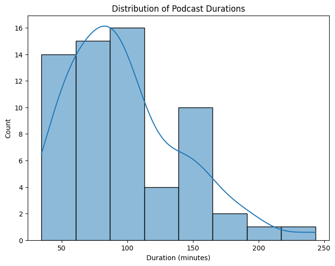
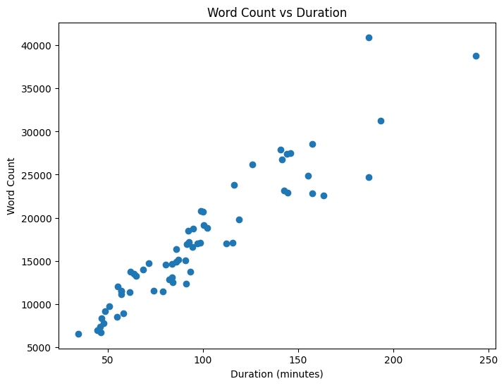
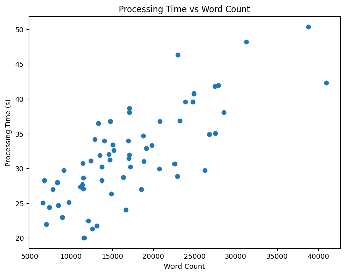
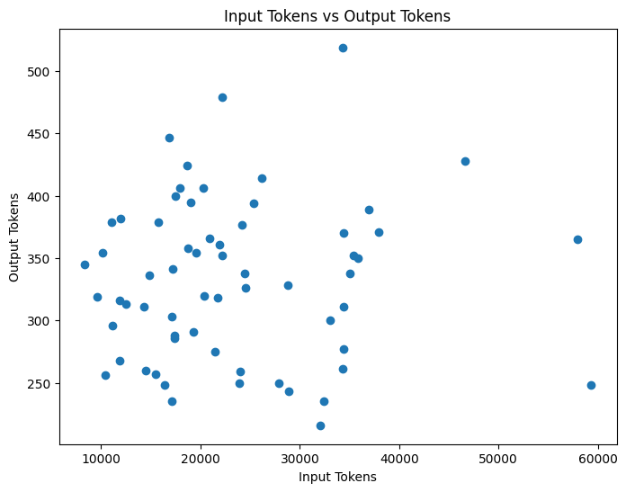
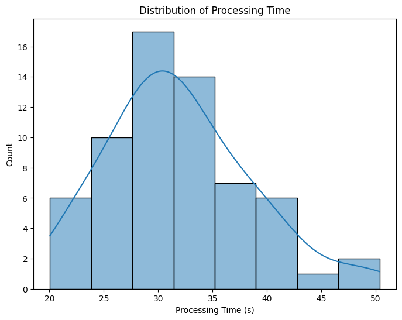
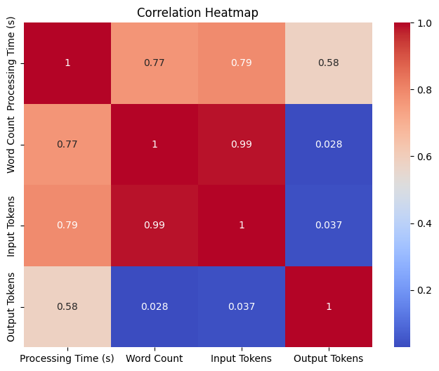

import pandas as pd
import numpy as np
import matplotlib.pyplot as plt
import seaborn as sns
import warnings
warnings.filterwarnings('ignore')Top Books and Interesting Ideas discussed from Dwarkesh Patel’s Podcasts
- Analysed data from Dwarkesh Patel’s podcasts to extract key details like author names, bios, book recommendations, and interesting ideas discussed
- Processed a total of 63 podcast transcripts, spending over 30 minutes of processing time
- Used over 1.5 million input tokens and generated over 20,000 output tokens from Antropic’s Claude 3 API
- Visualized relationships between word count, processing time, input tokens and output tokens using matplotlib and seaborn
- Estimated the total cost of the project based on Anthropic’s Cluade 3 Opus pricing for input and output tokens
- Extracted and summarized the top books and ideas discussed across all the podcasts analyzed
df = pd.read_csv("podcast_analysis.csv")df.head()| Unnamed: 0 | File Name | date_published | duration | duration_in_minute | Processing Time (s) | Word Count | Input Tokens | Output Tokens | Result | |
|---|---|---|---|---|---|---|---|---|---|---|
| 0 | 0 | Sholto Douglas & Trenton Bricken - How to Buil... | 2024-03-28 | 11593 | 193.216667 | 48.144148 | 31262 | 46658 | 428 | Here is my response based on the information p... |
| 1 | 1 | Demis Hassabis - Scaling, Superhuman AIs, Alph... | 2024-02-28 | 3694 | 61.566667 | 27.644215 | 11395 | 17087 | 303 | Here is my attempt at completing the requested... |
| 2 | 2 | Patrick Collison (Stripe CEO) - Craft, Beauty,... | 2024-02-21 | 6931 | 115.516667 | 31.906584 | 17078 | 24019 | 259 | Here is my attempt at completing the requested... |
| 3 | 3 | Tyler Cowen - Hayek, Keynes, & Smith on AI, An... | 2024-01-31 | 6142 | 102.366667 | 30.989137 | 18829 | 28844 | 243 | Here is my attempt at the requested informatio... |
| 4 | 4 | Jung Chang (Wild Swans author) - Mao, Cultural... | 2023-11-29 | 5475 | 91.250000 | 31.047358 | 12351 | 15745 | 379 | Here is my attempt at the requested informatio... |
# overall processing time, total input tokens, total output token, number of podcast
print("Overall Processing Time in Minutes: ", df['Processing Time (s)'].sum()/60)
print("Overall Input Tokens: ", df['Input Tokens'].sum())
print("Overall Output Tokens: ", df['Output Tokens'].sum())
print("Overall Total Tokens: ", df['Input Tokens'].sum()+df['Output Tokens'].sum())
print("Number of Podcasts: ", df.shape[0])
million_input_token_price = 15
million_output_token_price = 75 # in dollar
print("Overall Input Token Cost: ", df['Input Tokens'].sum()/1000000*million_input_token_price)
print("Overall Output Token Cost: ", df['Output Tokens'].sum()/1000000*million_output_token_price)
Overall Processing Time in Minutes: 33.49222877422969
Overall Input Tokens: 1477272
Overall Output Tokens: 20933
Overall Total Tokens: 1498205
Number of Podcasts: 63
Overall Input Token Cost: 22.15908
Overall Output Token Cost: 1.5699750000000001df.info()<class 'pandas.core.frame.DataFrame'>
RangeIndex: 63 entries, 0 to 62
Data columns (total 10 columns):
# Column Non-Null Count Dtype
--- ------ -------------- -----
0 Unnamed: 0 63 non-null int64
1 File Name 63 non-null object
2 date_published 63 non-null object
3 duration 63 non-null int64
4 duration_in_minute 63 non-null float64
5 Processing Time (s) 63 non-null float64
6 Word Count 63 non-null int64
7 Input Tokens 63 non-null int64
8 Output Tokens 63 non-null int64
9 Result 63 non-null object
dtypes: float64(2), int64(5), object(3)
memory usage: 5.1+ KBdf["date_published"] = pd.to_datetime(df["date_published"])
df.set_index('date_published', inplace=True)
# Duration distribution
plt.figure(figsize=(8, 6))
sns.histplot(df['duration_in_minute'], kde=True)
plt.xlabel('Duration (minutes)')
plt.ylabel('Count')
plt.title('Distribution of Podcast Durations')
plt.show()
# Scatter plot of Word Count vs Duration
plt.figure(figsize=(8, 6))
plt.scatter(df['duration_in_minute'], df['Word Count'])
plt.xlabel('Duration (minutes)')
plt.ylabel('Word Count')
plt.title('Word Count vs Duration')
plt.show()

# Plot 1: Processing Time vs Word Count
plt.figure(figsize=(8, 6))
plt.scatter(df['Word Count'], df['Processing Time (s)'])
plt.xlabel('Word Count')
plt.ylabel('Processing Time (s)')
plt.title('Processing Time vs Word Count')
plt.show()
# Plot 2: Input Tokens vs Output Tokens
plt.figure(figsize=(8, 6))
plt.scatter(df['Input Tokens'], df['Output Tokens'])
plt.xlabel('Input Tokens')
plt.ylabel('Output Tokens')
plt.title('Input Tokens vs Output Tokens')
plt.show()
# Plot 3: Distribution of Processing Time
plt.figure(figsize=(8, 6))
sns.histplot(df['Processing Time (s)'], kde=True)
plt.xlabel('Processing Time (s)')
plt.ylabel('Count')
plt.title('Distribution of Processing Time')
plt.show()
# Plot 4: Correlation Heatmap
plt.figure(figsize=(8, 6))
corr_matrix = df[['Processing Time (s)', 'Word Count', 'Input Tokens', 'Output Tokens']].corr()
sns.heatmap(corr_matrix, annot=True, cmap='coolwarm')
plt.title('Correlation Heatmap')
plt.show()



Download Youtube Video Transcripts
import os
from pytube import Playlist
from youtube_transcript_api import YouTubeTranscriptApi
from youtube_transcript_api._errors import TranscriptsDisabled, NoTranscriptFound
def download_playlist_transcripts(playlist_url):
# Create a Playlist object using the provided URL
playlist = Playlist(playlist_url)
# Create a folder named "podcast" if it doesn't exist
if not os.path.exists("podcast"):
os.makedirs("podcast")
# Create a dictionary to store file name, date published, and podcast duration
podcast_info = {}
# Iterate through each video in the playlist
for video in playlist.videos:
video_id = video.video_id
try:
# Attempt to fetch the transcript for the current video
transcript = YouTubeTranscriptApi.get_transcript(video_id)
# Saving the transcript to a text file in the "podcast" folder
file_name = f"{video.title}.txt".replace("/", "-") # Replace '/' to avoid file path issues
file_path = os.path.join("podcast", file_name)
with open(file_path, 'w', encoding='utf-8') as file:
for line in transcript:
file.write(f"{line['text']}\n")
# Add file name, date published, and podcast duration to the dictionary
podcast_info[file_name] = {
"date_published": video.publish_date.strftime("%Y-%m-%d"),
"duration": video.length
}
print(f"Transcript downloaded for video: {video.title}")
except TranscriptsDisabled:
print(f"Transcripts are disabled for video: {video.title}")
except NoTranscriptFound:
print(f"No transcript found for video: {video.title}")
except Exception as e:
print(f"An error occurred: {e}")
return podcast_info
playlist_url = 'https://www.youtube.com/watch?v=UTuuTTnjxMQ&list=PLd7-bHaQwnthaNDpZ32TtYONGVk95-fhF'
podcast_info = download_playlist_transcripts(playlist_url)Transcript downloaded for video: Sholto Douglas & Trenton Bricken - How to Build & Understand GPT-7's Mind
Transcript downloaded for video: Demis Hassabis - Scaling, Superhuman AIs, AlphaZero atop LLMs, Rogue Nations Threat
Transcript downloaded for video: Patrick Collison (Stripe CEO) - Craft, Beauty, & The Future of Payments
Transcript downloaded for video: Tyler Cowen - Hayek, Keynes, & Smith on AI, Animal Spirits, Anarchy, & Growth
Transcript downloaded for video: Jung Chang (Wild Swans author) - Mao, Cultural Revolution, Great Leap Forward, & Modern CCP
Transcript downloaded for video: Andrew Roberts - SV's Napoleon Cult, Why Hitler Lost WW2, Churchill as Applied Historian
Transcript downloaded for video: Dominic Cummings - How Dysfunctional Govt Killed 1000s in COVID
Transcript downloaded for video: Paul Christiano - Preventing an AI Takeover
Transcript downloaded for video: Shane Legg (DeepMind Founder) - 2028 AGI, Superhuman Alignment, New Architectures
Transcript downloaded for video: Grant Sanderson (3Blue1Brown) - Past, Present, & Future of Mathematics
Transcript downloaded for video: Sarah C. M. Paine - WW2, Taiwan, Ukraine, & Maritime vs Continental Powers
Transcript downloaded for video: George Hotz vs Eliezer Yudkowsky AI Safety Debate
Transcript downloaded for video: Dario Amodei (Anthropic CEO) - $10 Billion Models, OpenAI, Scaling, & Alignment
Transcript downloaded for video: Andy Matuschak - Self-Teaching, Spaced Repetition, Why Books Don’t Work
Transcript downloaded for video: Carl Shulman (Pt 2) - AI Takeover, Bio & Cyber Attacks, Detecting Deception, & Humanity's Far Future
Transcript downloaded for video: Carl Shulman (Pt 1) - Intelligence Explosion, Primate Evolution, Robot Doublings, & Alignment
Transcript downloaded for video: Richard Rhodes - Making of Atomic Bomb, WW2, Oppenheimer, AI, & Apocalypse
Transcript downloaded for video: Eliezer Yudkowsky - Why AI Will Kill Us, Aligning LLMs, Nature of Intelligence, SciFi, & Rationality
Transcript downloaded for video: Ilya Sutskever (OpenAI Chief Scientist) - Building AGI, Alignment, Spies, Microsoft, & Enlightenment
Transcript downloaded for video: Nat Friedman (Github CEO) - Reading Ancient Scrolls, Open Source, & AI
Transcript downloaded for video: Brett Harrison - FTX US Former President Speaks Out
Transcript downloaded for video: Marc Andreessen - AI, Crypto, 1000 Elon Musks, Regrets, Vulnerabilities, & Managerial Revolution
Transcript downloaded for video: Garett Jones - Immigration, National IQ, & Less Democracy
Transcript downloaded for video: Lars Doucet - Progress, Poverty, Georgism, & Why Rent is Too Damn High
Transcript downloaded for video: Holden Karnofsky - History's Most Important Century
Transcript downloaded for video: Bethany McLean - Enron, FTX, 2008, Musk, Frauds, & Visionaries
Transcript downloaded for video: Nadia Asparouhova - Tech Elites, Democracy, Open Source, & Philanthropy
Transcript downloaded for video: Byrne Hobart - FTX, Drugs, Twitter, Taiwan, & Monasticism
Transcript downloaded for video: Edward Glaeser - Cities, Terrorism, Housing, & Remote Work
Transcript downloaded for video: Kenneth T. Jackson - Robert Moses, Hero of New York?
Transcript downloaded for video: Brian Potter - Future of Construction, Ugly Modernism, & Environmental Review
Transcript downloaded for video: Bryan Caplan - Feminists, Billionaires, and Demagogues
Transcript downloaded for video: Tyler Cowen - Why Society Will Collapse & Why Sex is Pessimistic
Transcript downloaded for video: Charles C. Mann - Americas Before Columbus & Scientific Wizardry
Transcript downloaded for video: Austin Vernon - Energy Superabundance, Starship Missiles, & Finding Alpha
Transcript downloaded for video: Steve Hsu - Intelligence, Embryo Selection, & The Future of Humanity
Transcript downloaded for video: Will MacAskill - Longtermism, Effective Altruism, History, & Technology
Transcript downloaded for video: Joseph Carlsmith - Utopia, AI, & Infinite Ethics
Transcript downloaded for video: Fin Moorhouse - Longtermism, Space, & Entrepreneurship
Transcript downloaded for video: Alexander Mikaberidze - Napoleon, War, Progress, and Global Order
Transcript downloaded for video: Sam Bankman-Fried - Crypto, FTX, Altruism, & Leadership
Transcript downloaded for video: Agustin Lebron - Trading, Crypto, and Adverse Selection
Transcript downloaded for video: Ananyo Bhattacharya - John von Neumann, Jewish Genius, and Nuclear War
Transcript downloaded for video: Manifold Markets Founder - Predictions Markets & Revolutionizing Governance
Transcript downloaded for video: Jimmy Soni - Peter Thiel, Elon Musk, and the Paypal Mafia
Transcript downloaded for video: Bryan Caplan - Labor Econ, Poverty, & Mental Illness
Transcript downloaded for video: Richard Hanania - Foreign Policy, Fertility, and Experts
Transcript downloaded for video: David Deutsch - AI, America, Fun, & Bayes
Transcript downloaded for video: Byrne Hobart - Optionality, Stagnation, and Secret Societies
Transcript downloaded for video: David Friedman - Dating Markets, Legal Systems, Bitcoin, and Automation
Transcript downloaded for video: Sarah Fitz-Claridge - Taking Children Seriously | The Lunar Society #15
Transcript downloaded for video: Michael Huemer - Anarchy, Capitalism, and Progress
Transcript downloaded for video: Uncle Bob - The Long Reach of Code, Automating Programming, and Developing Coding Talent
Transcript downloaded for video: Scott Aaronson - Quantum Computing, Complexity, and Creativity
Transcript downloaded for video: Scott Young - Ultralearning, The MIT Challenge
Transcript downloaded for video: Charles Murray - Human Accomplishment and the Future of Liberty | The Lunar Society #10
Transcript downloaded for video: Alex Tabarrok - Prizes, Prices, and Public Goods
Transcript downloaded for video: Caleb Watney - America's Innovation Engine
Transcript downloaded for video: Robin Hanson - The Long View and The Elephant in the Brain
Transcript downloaded for video: Jason Crawford - The Roots of Progress & the History of Technology
Transcript downloaded for video: Matjaž Leonardis - Science, Identity and Probability
Transcript downloaded for video: Tyler Cowen - The Great Reset
Transcript downloaded for video: Bryan Caplan - Nurturing Orphaned Ideas, Education, and UBIimport pandas as pd
df = pd.DataFrame.from_dict(podcast_info, orient='index')
df = df.reset_index()
df = df.rename(columns={'index': 'File Name'})
df["duration_in_minute"] = df["duration"]/60
df| File Name | date_published | duration | duration_in_minute | |
|---|---|---|---|---|
| 0 | Sholto Douglas & Trenton Bricken - How to Buil... | 2024-03-28 | 11593 | 193.216667 |
| 1 | Demis Hassabis - Scaling, Superhuman AIs, Alph... | 2024-02-28 | 3694 | 61.566667 |
| 2 | Patrick Collison (Stripe CEO) - Craft, Beauty,... | 2024-02-21 | 6931 | 115.516667 |
| 3 | Tyler Cowen - Hayek, Keynes, & Smith on AI, An... | 2024-01-31 | 6142 | 102.366667 |
| 4 | Jung Chang (Wild Swans author) - Mao, Cultural... | 2023-11-29 | 5475 | 91.250000 |
| ... | ... | ... | ... | ... |
| 58 | Robin Hanson - The Long View and The Elephant ... | 2020-08-31 | 6029 | 100.483333 |
| 59 | Jason Crawford - The Roots of Progress & the H... | 2020-08-25 | 2918 | 48.633333 |
| 60 | Matjaž Leonardis - Science, Identity and Proba... | 2020-08-21 | 2073 | 34.550000 |
| 61 | Tyler Cowen - The Great Reset.txt | 2020-07-10 | 2801 | 46.683333 |
| 62 | Bryan Caplan - Nurturing Orphaned Ideas, Educa... | 2020-05-22 | 3432 | 57.200000 |
63 rows × 4 columns
len(os.listdir("podcast"))
63import os
import anthropic
from dotenv import load_dotenv
from IPython.display import Markdown
# Load API keys from .env file
load_dotenv()
api_key = os.getenv("ANTHROPIC_API_KEY")
# Set up the Anthropic API client
client = anthropic.Client(api_key=api_key)
transcript_directory = "podcast"
def process_transcript(transcript_text):
prompt = f"""Here is the transcript from a YouTube video which contains a conversation between Podcaster Dwarkesh
Patel and his guest:
<transcript>
{transcript_text}
</transcript>
Please carefully read through the entire transcript above. Then complete the following steps:
1. Extract a short 1-2 sentence bio of the guest, if possible based on information in the
transcript.
2. Make a list of any books suggested by the guest in the podcast. Use commas to separate the book
titles.
3. List out the unique interesting ideas discussed in the podcast.
4. Summarize any discussion about how the guest started their career or any career advice they
provided.
5. Summarize any discussion about the guest's learning process or how they learn.
Do not hallucinate or fabricate any information. If some piece of information requested above is not
found in the transcript, simply skip that part. Do not write things like "not found in transcript".
Provide your full response inside <result> tags.
"""
response = client.messages.create(
model="claude-3-opus-20240229",
max_tokens=4096,
messages=[
{"role": "user", "content": prompt}
]
)
return response
import time
# Process each transcript file in the directory
results = {}
for i, filename in enumerate(os.listdir(transcript_directory)):
if filename.endswith(".txt"):
# Read the transcript text from the file
with open(os.path.join(transcript_directory, filename), "r") as file:
transcript_text = file.read()
display(f"Processed {i+1}/{len(os.listdir(transcript_directory))}: {filename}")
display("*"*100)
# Process the transcript using Claude
start_time = time.time()
result = process_transcript(transcript_text)
end_time = time.time()
processing_time = end_time - start_time
# Get the number of words in the file
word_count = len(transcript_text.split())
# Store the result, processing time, word count, input tokens, and output tokens in the dictionary
results[filename] = (processing_time, word_count, result.usage.input_tokens, result.usage.output_tokens, result.content[0].text)
display(Markdown(result.content[0].text))
display(Markdown(f"Input tokens: {result.usage.input_tokens}"))
display(Markdown(f"Output tokens: {result.usage.output_tokens}"))
display(Markdown(f"Processing time: {processing_time} seconds"))
display(Markdown(f"Podcast Word count: {word_count}"))
'Processed 1/63: Ananyo Bhattacharya - John von Neumann, Jewish Genius, and Nuclear War.txt''****************************************************************************************************'Here is my attempt at completing the specified tasks based on the transcript:
The Man from the Future: The Visionary Life of John von Neumann
Interesting ideas discussed:
- John von Neumann was a prolific genius and polymath who made seminal contributions to numerous fields including computer science, mathematics, physics, economics, and game theory
- Von Neumann’s work on cellular automata and self-reproducing machines was prescient and is only now being realized with research into xenobots
- Von Neumann’s game theory work focused more on cooperation and stable solutions rather than just zero-sum competitive games
- Von Neumann’s views were shaped by seeing the rise of communism and Nazism in Europe, making him wary of authoritarian governments
No direct discussion of how the guest started his career or career advice.
No direct discussion of the guest’s personal learning process. The guest advises against trying to emulate Von Neumann’s intense work habits and narrow focus on intellectual pursuits at the expense of personal relationships and work-life balance.
Input tokens: 11108
Output tokens: 296
Processing time: 24.720909118652344 seconds
Podcast Word count: 8463
"Processed 2/63: Sholto Douglas & Trenton Bricken - How to Build & Understand GPT-7's Mind.txt"'****************************************************************************************************'Here is my response based on the information provided in the transcript:
The Symbolic Species
Unique interesting ideas discussed:
- Long context windows in language models allow them to ingest and learn from large amounts of information very effectively
- Much of the learning in language models happens in the forward pass now, rather than during training
- AI agents haven’t taken off yet due to lack of reliability over long time horizons
- Brain regions like the cerebellum may be doing a lot of computation in superposition which is hard to interpret
- Features in AI models can be infinitely split into subfeatures upon close examination
- Curriculum learning could potentially make models more sample efficient by learning concepts in a structured order
- Features in language models are often universal across models trained on similar data
- Interpretability research can help identify deceptive or malicious circuits in models that can then be ablated for safety
Sholto and Trenton both took non-traditional paths into AI research. Sholto worked as a McKinsey consultant while doing AI research on nights and weekends which led to him being discovered and hired as part of an experiment at Google Brain. His agency, hard work ethic, and ability to learn and apply knowledge from many different domains allowed him to make quick progress and impact. Trenton got into computational neuroscience and interpretability research early in grad school and his interests aligned well with the research agenda at Anthropic, leading to him joining the company.
Sholto learns by obsessively reading papers, talking to domain experts to absorb their knowledge, and fearlessly taking on challenging research problems. He emphasizes the importance of ruthlessly prioritizing the highest-leverage problems to work on.
Input tokens: 46658
Output tokens: 428
Processing time: 48.144148111343384 seconds
Podcast Word count: 31262
'Processed 3/63: Brian Potter - Future of Construction, Ugly Modernism, & Environmental Review.txt''****************************************************************************************************'Here is my summary of the key information requested from the podcast transcript:
Books suggested by the guest: Where’s My Flying Car?
Unique interesting ideas discussed:
- Why modern buildings look uglier and have less ornamentation than older buildings
- The garbage can theory of organizational decision making
- Why construction has been slow to adopt prefabrication and 3D printing
- How zoning laws and environmental regulations like NEPA have slowed down construction
- Why construction has not seen the same productivity gains as other industries
- How the guest started their career / career advice:
- Go to a good engineering school as the degree is valued in the building engineering field
- Consider working at a construction technology startup, especially in software development, to get into the industry in an oblique way
- Look for opportunities in green building, low-carbon materials, construction robotics, and prefab construction
- Guest’s learning process: Not discussed in the transcript.
Input tokens: 34310
Output tokens: 261
Processing time: 35.006452322006226 seconds
Podcast Word count: 27475
'Processed 4/63: Will MacAskill - Longtermism, Effective Altruism, History, & Technology.txt''****************************************************************************************************'Here is a summary of the requested information from the podcast transcript:
Books mentioned: What We Owe the Future
Unique interesting ideas discussed:
- Moral values are highly contingent on historical events. Our current values are likely far from the moral truth.
- Moral progress is more contingent than scientific/technological progress. Economic growth and technological development are likely to happen regardless of which society develops them first.
- We are living in a time of “plasticity” where our actions and the values we lock in could shape the long-term future.
- In the long-term future, if a single value system becomes dominant globally and is locked in by advanced technology, it could persist for a very long time.
- Promoting positive values that can stand the test of time may be a high impact way to shape the long-term future.
Career discussion: No direct career advice provided. MacAskill currently works as a professor which allows him to develop big picture ideas and communicate them to inspire others to do good. He has also co-founded and advised several effective altruism organizations.
Learning process: Not directly discussed in the podcast.
Input tokens: 14302
Output tokens: 311
Processing time: 27.399937868118286 seconds
Podcast Word count: 11151
'Processed 5/63: Dario Amodei (Anthropic CEO) - $10 Billion Models, OpenAI, Scaling, & Alignment.txt''****************************************************************************************************'Here is my attempt at completing the requested steps based on the transcript:
[No books were suggested by the guest in this podcast.]
Interesting ideas discussed:
- AI systems are rapidly gaining capabilities and could potentially match humans at many tasks within the next 2-3 years
- Current AI systems are hard to control and align, and could pose existential risk if they become highly capable
- Cybersecurity is crucial to prevent AI systems from falling into the wrong hands
- Mechanistic interpretability is a key approach to understanding what is happening inside AI systems in order to align them
- The difficulty of aligning AI systems is a complex problem without a clear binary solution
- Analogies between AI and human intelligence are beginning to break down as AI scales up
- Whether current large language models are conscious is an open question that may become more pressing in the near future
[No significant discussion of how the guest started their career or career advice.]
Dario learned about AI scaling laws empirically through hands-on experience and experiments early in his career at Baidu and OpenAI. He found consistent patterns that more compute, data, and model size led to smooth improvements in capabilities across many domains. Discussions with others like Ilya Sutskever further convinced him that this scaling phenomenon was a fundamental driver of AI progress.
Input tokens: 28815
Output tokens: 328
Processing time: 33.30003094673157 seconds
Podcast Word count: 19829
'Processed 6/63: Matjaž Leonardis - Science, Identity and Probability.txt''****************************************************************************************************'Here is my response based on the information in the transcript:
Books suggested: Thinking, Fast and Slow by Daniel Kahneman
Unique interesting ideas:
- Identifying too much with being a “scientist” and following a specific scientific method can be counterproductive. It’s better to simply pursue questions and problems wherever they lead.
- There is ambiguity around whether people are really following a method when forming thoughts and ideas. Thoughts often just arise in the mind.
- Universal, explanatory theories are appealing because people have a psychological need for regularity. Such theories also enable progress by suggesting things to test that can prove them false.
- People are naturally curious and interested in everything. Systematic learning of fundamentals before advanced topics is unnecessary and can be counterproductive. It’s better to just read about what you find interesting.
No specific career advice or discussion of how the guest started his career.
The guest’s key ideas on learning:
- Don’t try to force systematic learning of fundamentals before advanced topics. Just read about whatever you find interesting.
- Connect with other people and groups working on problems, as this will surface valuable things you can contribute to.
- People have tremendous goodwill towards helping young people learn. The key challenge is idiosyncratically finding the right mentors and problems to work on.
Input tokens: 8299
Output tokens: 345
Processing time: 25.074346780776978 seconds
Podcast Word count: 6561
'Processed 7/63: Nadia Asparouhova - Tech Elites, Democracy, Open Source, & Philanthropy.txt''****************************************************************************************************'Here is my attempt at extracting the requested information from the transcript:
Books mentioned: Working in Public: The Making and Maintenance of Open Source Software
Interesting ideas discussed:
- Effective altruism is much closer to the finance Wall Street elite mindset than it is to the startup mindset
- The tech startup elite mindset is focused on meritocracy and the power of talented individuals to break institutions
- Leaderless, faceless, governed by protocol and code mindsets in crypto vs individual leader-driven open source projects and communities
- Idea machines are a new form of philanthropy driven by communities forming around shared values/ideas and then getting capitalized by funders to turn ideas into real world initiatives
- It’s better for elite philanthropists to spend down fortunes within their lifetimes vs creating perpetual foundations
- Writing and intellectual work is valuable even if hard to quantify the impact - it influences builders even if indirectly
- Climate doomism and other forms of existential risk are new “gravity wells” attracting lots of smart people in the last 5 years in the absence of other grand shared narratives
Career advice: Do the thing you absolutely have to do and lean into your obsession, even if it doesn’t seem like the most impactful thing. Care more about quality and reaching the right people vs quantity of audience.
Learning process: Talk to people - you can learn a lot more by directly talking to open source developers than speculating about what they might be thinking. Be observant and write about what you see.
Input tokens: 18977
Output tokens: 395
Processing time: 34.19145703315735 seconds
Podcast Word count: 12834
'Processed 8/63: Eliezer Yudkowsky - Why AI Will Kill Us, Aligning LLMs, Nature of Intelligence, SciFi, & Rationality.txt''****************************************************************************************************'Here is my attempt at the requested information from the podcast transcript:
Adaptation and Natural Selection
Unique interesting ideas discussed:
- AI alignment is an extremely difficult problem and humanity is likely doomed because we will develop superintelligent AI systems before solving alignment
- Human values and drives have diverged significantly from the ancestral environment and evolutionary pressures that created us, and AI systems trained in different ways will likely have even more alien values
- It’s very difficult to specify a utility function for an AI that would actually result in outcomes desirable to humans upon maximization
- AIs helping humans solve AI alignment is a very dangerous proposition and enhancing human intelligence to solve the problem would be safer
- Rationality is not about social status or winning contests, it’s about having accurate beliefs and decision-making procedures to achieve your goals
No discussion of Eliezer’s early career or career advice was found in the transcript.
Eliezer has tried to help others develop the skills needed for AI alignment research through his writing, such as the Rationality Sequences on Less Wrong and Harry Potter and the Methods of Rationality. But he believes the education system does not properly train people to do real science and revolutionary insights, which are often passed down through apprenticeship instead. Overall, he has spent many years on the problem of how to transmit the necessary skills and has not fully solved it.
Input tokens: 57983
Output tokens: 365
Processing time: 50.36423921585083 seconds
Podcast Word count: 38775
'Processed 9/63: Robin Hanson - The Long View and The Elephant in the Brain.txt''****************************************************************************************************'Here is my attempt at completing the requested tasks based on the provided transcript:
Books suggested by the guest: The Elephant in the Brain
Unique interesting ideas discussed:
- Organizations exist to promote themselves and collect resources, not necessarily to achieve their stated purposes
- Remote work will lead to global specialization of labor and large productivity gains over the next 30 years
- Conversation is more about signaling abilities and testing social alliances than exchanging information
- Nerds are better at analyzing social dynamics because they observe them more explicitly
- Parents dominate children in part to signal their own status, not just to benefit the children
- Profit maximization is an oversimplified model of firm behavior; firms are battlegrounds for competing political coalitions
- Most innovation comes from many small changes and experiments, not top-down planning
The guest’s career advice is to focus on learning general, long-lasting skills in your 20s rather than narrow technical skills. Stick with important problems over many decades. Take an overall view to identify neglected areas that are important to work on.
The guest’s learning process involves moving from one interesting topic to the next as he gains key insights that change what topics seem most important and interesting to pursue. He tries to take a broad perspective to identify important areas that are neglected by others.
Input tokens: 24464
Output tokens: 338
Processing time: 32.86100196838379 seconds
Podcast Word count: 19118
'Processed 10/63: Bethany McLean - Enron, FTX, 2008, Musk, Frauds, & Visionaries.txt''****************************************************************************************************'Here is my attempt at the requested summary of the transcript:
Books by guest: The Smartest Guys in the Room, All the Devils are Here, Saudi America
Unique interesting ideas discussed:
- The fine line between being a visionary and a fraudster, and how self-delusion plays a role
- The ineffectiveness of criminal prosecutions in deterring future corporate fraud
- The idea of “moral luck” - that circumstance and environment shape behavior as much as individual character
- The importance of incentive structures and culture in shaping corporate behavior
- The role of the bankruptcy process in uncovering information after a corporate scandal
- The challenges with creating effective private rating agencies and auditors
Career advice from guest: Bethany advises aspiring writers and journalists to force themselves to write things out in full, even when dealing with complex topics. The process of writing clearly requires you to think clearly and can reveal gaps in your own understanding.
Guest’s learning process: Bethany says writing is a key part of her learning and thought process. Only by writing about a topic and trying to explain it clearly does she realize what she truly understands and doesn’t understand. She finds writing to be difficult but invaluable for clarifying her thinking.
Input tokens: 20906
Output tokens: 366
Processing time: 28.6966609954834 seconds
Podcast Word count: 16323
"Processed 11/63: Caleb Watney - America's Innovation Engine.txt"'****************************************************************************************************'Here is a summary of the key information requested from the transcript:
Books suggested: Decadent Society by Ross Douthat, One Billion Americans by Matthew Yglesias.
Interesting ideas discussed:
- Importance of physical agglomeration effects for innovation vs remote work
- High skill immigration reform as a key lever for improving innovation
- Big tech companies and the debate around regulating or breaking them up to promote competition
- Importance of federal R&D funding and reforming how it is structured and awarded
- Leveraging big climate mega projects and technology to combat climate change
- Impact of demographic trends like falling fertility rates on innovation and culture
Career advice: Think hard about the questions and problems that matter for society and where you can be most effective in addressing them, even if it runs counter to self-interest or immediate profitability. Policy analysis is an area where individuals can have a big impact even if it’s not directly economically rewarding.
Guest’s learning process: Not directly discussed in the transcript.
Input tokens: 15488
Output tokens: 257
Processing time: 22.48008441925049 seconds
Podcast Word count: 12024
'Processed 12/63: Bryan Caplan - Feminists, Billionaires, and Demagogues.txt''****************************************************************************************************'Here is the information I extracted from the transcript:
Books suggested by Brian Caplan in the podcast: Don’t Be a Feminist: Essays on Genuine Justice, How Evil Are Politicians? Essays on Demagoguery, Open Borders: The Science and Ethics of Immigration, The Case Against Education, The Rational Voter, The Russian Revolution by Richard Pipes
Unique interesting ideas discussed:
- Immigration restrictions have enormous costs in terms of missed economic growth
- Feminism is less true today because of excessive false accusations against men
- Historical contingency plays a large role in outcomes, e.g. the Russian Revolution would likely not have succeeded without Lenin
- The best way to incentivize billionaires and entrepreneurship is to celebrate their success, not tax them excessively
- Anarcho-capitalism with competing private legal systems could be a viable system in the long-run
- Career advice:
- Be ultra-honest in your dealings with others to build credibility
- Learning process:
- When studying a controversial issue, focus on looking at data and historical facts rather than pontificating
Input tokens: 33079
Output tokens: 300
Processing time: 29.67089319229126 seconds
Podcast Word count: 26183
'Processed 13/63: Carl Shulman (Pt 1) - Intelligence Explosion, Primate Evolution, Robot Doublings, & Alignment.txt''****************************************************************************************************'Here is my attempt at extracting the requested information from the transcript:
[No books were suggested by the guest in this transcript.]
Interesting ideas discussed:
- The possibility of an AI-driven intelligence explosion and its potential impacts
- How AI could contribute to and accelerate AI research, leading to rapid recursive improvement
- Comparing the scaling of AI capabilities to human evolution and the growth of human civilization
- Scenarios for how advanced AI could automate and expand industrial production and robotics
- Challenges and approaches to aligning advanced AI systems with human values
- Catastrophic risks from potential AI takeover scenarios
[No discussion of how the guest started their career or specific career advice was found in the transcript.]
[No discussion of the guest’s personal learning process was found in the transcript.]
Input tokens: 32437
Output tokens: 235
Processing time: 30.634654998779297 seconds
Podcast Word count: 22553
'Processed 14/63: Kenneth T. Jackson - Robert Moses, Hero of New York?.txt''****************************************************************************************************'Here is my attempt at completing the requested tasks based solely on the information provided in the transcript:
Books suggested: The Power Broker by Robert Caro, Robert Moses and the Modern City: The Transformation of New York by Kenneth T. Jackson
Unique interesting ideas discussed:
- Robert Moses had more power than any urban figure in American history and was responsible for building most of New York City’s major roads, bridges, parks, and public works from 1924-1970
- Had Robert Moses not done what he did, New York may have declined like other major Northeast and Midwest cities in the mid-20th century
- Moses was a ruthless, arrogant master builder who didn’t see people or communities, only large scale projects
- It would be nearly impossible for someone like Moses to accumulate that much power and push through large public works today due to changes in laws, public opposition, and bureaucracy
- The automobile and highways both shaped and responded to cultural attitudes and preferences in the mid-20th century
- Jane Jacobs, Moses’ nemesis, appreciated the intricacies of neighborhoods and communities in a way Moses never did
Input tokens: 20408
Output tokens: 320
Processing time: 28.263413906097412 seconds
Podcast Word count: 13707
'Processed 15/63: Grant Sanderson (3Blue1Brown) - Past, Present, & Future of Mathematics.txt''****************************************************************************************************'Here is my attempt at extracting the requested information from the podcast transcript:
Books suggested by Grant Sanderson: Failure to Disrupt
Unique interesting ideas discussed: • The difficulty of defining AGI and whether an AI getting gold in the IMO would signify AGI • Why new mathematical discoveries and fields like information theory are relatively recent despite pure math existing for a long time • How initial conditions and chance interactions with teachers can significantly impact a student’s future career trajectory • The value of having STEM experts spend time as teachers to get more people engaged with math and science • The importance of social factors like friend groups in motivating learning, more so than the quality of explanations • How peer review voting systems helped surface high-quality math exposition videos in the Summer of Math Exposition contests
Grant did not discuss in detail how he started his career. He mentioned that the first 3Blue1Brown video was made when he was a senior at Stanford.
Grant discussed the importance of working through calculations yourself when self-learning math, rather than just reading explanations, in order to build intuition. He also mentioned that explaining concepts well requires remembering what it was like to not understand the concept, which gets harder over time.
Input tokens: 24499
Output tokens: 326
Processing time: 33.956478118896484 seconds
Podcast Word count: 16911
'Processed 16/63: Fin Moorhouse - Longtermism, Space, & Entrepreneurship.txt''****************************************************************************************************'Here is my attempt at extracting the requested information from the transcript:
Books suggested: Talent by Tyler Cowen and Daniel Gross, Anti-Fragile by Nassim Taleb
Unique interesting ideas discussed:
- The value of humility, endorsing changing your mind, and encouraging criticism for social movements and intellectual circles to avoid ossifying into an echo chamber
- The possibility that many worlds quantum theory could meaningfully affect how we think about the far future and ethics
- Whether the upside potential of for-profit companies aiming to do good is being underrated compared to non-profit work
- Potential concerns about whether space governance norms decided now will persist and affect the very long-term future
- The value of starting a podcast as a relatively easy way to invite conversations with and boost the ideas of impressive people
- Finn’s career advice:
- Be proactive about connecting with potential mentors and people working on topics that excite you
- Reflect on key decisions until you have a stable level of confidence in your choice, rather than waiting for certainty
- Be open to trying things like starting a podcast or blog, even if they may fail, because you will learn from them
- Finn’s learning process:
- Reading widely, including speculative ideas, and scrutinizing them to see if the arguments hold up
- Having conversations with experts to extract and spread important ideas
- Proactively reaching out to people he looks up to as potential mentors to learn from them
Input tokens: 36900
Output tokens: 389
Processing time: 41.87009596824646 seconds
Podcast Word count: 27881
'Processed 17/63: Edward Glaeser - Cities, Terrorism, Housing, & Remote Work.txt''****************************************************************************************************'Here is my attempt at summarizing the key information requested from the transcript:
Bio: Edward Glaeser is the chair of the Harvard Department of economics and the author of books and papers about cities, including Triumph of the City and Survival of the City.
Books suggested by guest: Triumph of the City by Edward Glaeser, Survival of the City by Edward Glaeser, The Power Broker by Robert Caro, Palaces for the People by Eric Klinenberg
Unique interesting ideas discussed:
- Cities on Mars would be limited by high transportation costs and would likely be car-oriented
- Cities are both vulnerable targets but also defensible spaces that can protect themselves from terrorism
- Americans are moving less between states than in the past, likely due to housing costs and the informal “safety net” of family support being tied to a location
- Information technology like books, telephones, and videoconferencing tends to complement face-to-face interaction in the long run, even if it substitutes for it in the short run
- City slums in developing countries can be safe due to permanence and community enforcement of norms, as long as there aren’t too many guns or lucrative drug trades
- The biggest unsolved problem in cities is how to protect developing world cities from the impacts of climate change
No significant discussion of the guest’s career start or career advice.
No significant discussion of the guest’s learning process or how they learn.
Input tokens: 14848
Output tokens: 336
Processing time: 28.60408091545105 seconds
Podcast Word count: 11490
'Processed 18/63: Scott Aaronson - Quantum Computing, Complexity, and Creativity.txt''****************************************************************************************************'Here is the response based on the transcript:
Books suggested: The Fabric of Reality by David Deutsch
Interesting ideas discussed:
- It doesn’t take that long to become the world expert on one particular tiny problem
- Many of the important discoveries in quantum mechanics were made by people at a young age
- There may be a threshold between chimpanzee and human intelligence in terms of ability to explain the world and build universal machines
- We don’t know if humans are “universal explainers” that can explain everything that is explainable
- There are fixed questions like the hard problem of consciousness that our current conception of an explanation may never suffice to explain
Career start and advice: Scott was unhappy in high school and wanted to get to college early, so he got a GED at 15 and started taking college courses. He went to Cornell at 16 and got his PhD by 22. His advice is to learn all you can by taking courses, talking to professors, reading papers, and becoming a world expert on something narrow. This can lead to collaborations and expanding expertise.
Learning process: Scott learned by taking advanced courses early on in college. He would read new quantum computing papers every day, flag interesting ones to read, and reach out to the authors with questions and ideas. He expanded his expertise by starting narrow and gradually broadening.
Input tokens: 19530
Output tokens: 354
Processing time: 32.598668813705444 seconds
Podcast Word count: 15147
'Processed 19/63: Demis Hassabis - Scaling, Superhuman AIs, AlphaZero atop LLMs, Rogue Nations Threat.txt''****************************************************************************************************'Here is my attempt at completing the requested steps based on the transcript:
[No books were suggested by the guest in this podcast.]
Unique interesting ideas discussed:
- Large language models today are surprisingly effective and capable of learning some abstract concepts implicitly
- Reinforcement learning and self-play could help generate useful synthetic data to train AI systems
- True multimodal AI systems that combine language, vision, robotics, etc. could be more powerful than single-modality systems
- We need better ways to analyze the internal representations and concepts learned by AI systems, similar to brain imaging
- Extensive testing, security measures, and governance will be critical to ensure advanced AI systems are safe and beneficial
Demis co-founded DeepMind in 2010 with the long-term goal of developing AGI, believing it was possible based on the existence proof of human intelligence. From the beginning, he thought deeply about the immense impact, both positive and negative, that such a technology could have.
[The guest did not discuss his personal learning process in this podcast.]
Input tokens: 17087
Output tokens: 303
Processing time: 27.64421510696411 seconds
Podcast Word count: 11395
'Processed 20/63: Tyler Cowen - Hayek, Keynes, & Smith on AI, Animal Spirits, Anarchy, & Growth.txt''****************************************************************************************************'Here is my attempt at the requested information from the transcript:
Books mentioned: Cowen’s book “How to Pay for the War” from 1940.
Unique interesting ideas discussed:
- Many people are overly optimistic and make irrational investments, but this may have social benefits
- Anarchy is everywhere to some degree, even within governments, and collusion is needed for systems to persist
- AI agents will likely replicate markets and economies on their own
- Intelligence is likely a net positive, even if it comes with risks
- Division of labor leads to more specialization but less curiosity and breadth of knowledge
- The “internet way of writing and thinking” is a new powerful mode of thought that is underrecognized
No information provided about how Tyler Cowen started his career or career advice.
No clear information provided about Tyler Cowen’s personal learning process.
Input tokens: 28844
Output tokens: 243
Processing time: 30.989137172698975 seconds
Podcast Word count: 18829
'Processed 21/63: Nat Friedman (Github CEO) - Reading Ancient Scrolls, Open Source, & AI.txt''****************************************************************************************************'Here is my attempt at completing the requested tasks based solely on the information in the transcript:
No books were directly suggested by the guest in this podcast.
Unique interesting ideas discussed:
- Using advanced imaging technology and machine learning to virtually unwrap and read ancient carbonized papyrus scrolls found in Herculaneum
- Acquisitions often fail because the acquired company’s culture gets disrupted and the most talented people leave
- It’s often better to raise the ceiling with new technology than try to raise the floor, because ceiling-raising tech will eventually become cheap and widespread
- The world is more inefficient than people think and there are many opportunities that are not being pursued
- In many cases, it’s more accurate to model the world as 500 people than 8 billion
- The cultural prohibition on micromanagement is harmful and great individuals should be empowered to exercise their judgment
- There will likely be wide-scale proliferation of AI foundation models rather than an oligopoly
Nat discussed how he started companies like Ximian and Xamarin which were acquired. As CEO of GitHub, he pushed the company to ship improvements and new features quickly after the acquisition to demonstrate that GitHub still cared about developers. No explicit career advice was provided.
Nat said he has a high willingness to try new things and jump into new projects impulsively. He cultivates a forward-looking view and doesn’t dwell on past accomplishments. No other explicit discussion of his learning process.
Input tokens: 25392
Output tokens: 394
Processing time: 38.10643720626831 seconds
Podcast Word count: 17064
'Processed 22/63: Joseph Carlsmith - Utopia, AI, & Infinite Ethics.txt''****************************************************************************************************'Here is my attempt at the requested information from the transcript:
Books suggested by guest: The Precipice by Toby Ord, Angels in America, Housekeeping by Marilynne Robinson
Unique interesting ideas discussed:
- The possibility of a profoundly better future (utopia) that is radically better than the present
- Trying to grapple with ethics and decision-making with respect to infinite worlds and universes
- Estimating the computational capacity it would take to match human brain cognition
- The self-indication assumption vs the self-sampling assumption in anthropic reasoning
- Much of futurism feels unreal because imagination is limited and futurism relies on lossy abstractions
Summary of career advice:
Summary of guest’s learning process:
Input tokens: 23890
Output tokens: 250
Processing time: 27.040849924087524 seconds
Podcast Word count: 18522
'Processed 23/63: Bryan Caplan - Nurturing Orphaned Ideas, Education, and UBI.txt''****************************************************************************************************'Here is my attempt at completing the requested tasks based on the podcast transcript:
Books suggested by Bryan Caplan in the podcast: Open Borders, The Case Against Education, The Ethics of Voting by Jason Brennan, How to Win Friends and Influence People by Dale Carnegie
Interesting ideas discussed:
- Education’s main value is signaling rather than imparting useful skills
- Nuclear weapons have made peace more likely but also increase risk of annihilation
- A Universal Basic Income is a bad idea because it wastes resources on people who don’t need it
- Many government policies directly cause poverty by stifling economic growth and opportunity
- Personal irresponsibility is also a significant contributor to poverty
- Zoning regulations and housing restrictions have huge economic costs by preventing people from moving to high-productivity areas
Career advice: No explicit career advice was provided in the transcript.
Learning process: No discussion of Caplan’s personal learning process was found in the transcript.
Input tokens: 14490
Output tokens: 260
Processing time: 20.04172420501709 seconds
Podcast Word count: 11571
'Processed 24/63: Dominic Cummings - How Dysfunctional Govt Killed 1000s in COVID.txt''****************************************************************************************************'Here is my attempt at extracting the requested information from the transcript:
Books mentioned: Memoir about the White House by Jared Kushner, Now It Can Be Told: The Story Of The Manhattan Project by General Leslie R. Groves, Kill Chain: The Rise of the High-Tech Assassins by Christian Brose, Bismarck: A Life (3 volume biography) by Otto Pflanze
Unique interesting ideas discussed:
- The chronic dysfunction and lack of effective management inside the UK government
- The reasons politicians are obsessed with the media and how it harms good governance
- The need to empower competent people and remove bureaucratic obstacles during crises like COVID
- Bismarck’s career as an analogy to the AI alignment problem
- The traits needed for a leader to effectively control and reform government
- Why creating a new political party and movement is so difficult
- The need for leaders and advisors who can synthesize knowledge across many fields
- How the education system, especially PPE degrees, fails to properly train future leaders
- Why smart, competent people are disincentivized from going into politics
- Expecting decline and failure as the default for the West based on historical patterns
Dominic started his career trying to launch an airline in Russia in the 1990s, which taught him lessons about how incentives shape behavior and to question his assumptions. No other career advice was provided.
No specific discussion of Dominic’s learning process.
Input tokens: 37957
Output tokens: 371
Processing time: 40.7433021068573 seconds
Podcast Word count: 24862
'Processed 25/63: Byrne Hobart - Optionality, Stagnation, and Secret Societies.txt''****************************************************************************************************'Here is my attempt at extracting the requested information from the transcript:
Books suggested: Where’s My Flying Car, The Money Game by Adam Smith (pseudonym), The Looming Tower, How Asia Works
Unique interesting ideas discussed:
- How financial concepts like expected value, optionality, and volatility can be applied to human decisions and institutions
- The challenge of coordination when solving complex problems, both within and between institutions
- Stagnation in technological and social progress since the mid-20th century
- Analyzing the motivations and incentives of secret societies
- The rationality community predicted COVID-19 early on due to their willingness to honestly extrapolate ideas to their logical conclusions
- There are increasing returns to knowledge and learning more about a topic
- Countries and individuals can escape the “middle income trap” by developing unique skills, technologies or branded products that others cannot easily match
- Career advice:
- Be very judicious about optionality in your career. Sometimes committing to a specific path without having options is valuable.
- Pick a narrow topic and strive to become one of the world’s leading experts on it by doing a deep dive of research and synthesizing the information. This demonstrates the ability to learn and creates a valuable body of work.
- Guest’s learning process:
- Byrne learns by buying a variety of books on a topic that take different angles, including fiction from the relevant time period, and reading them to get a broad understanding
- He finds that reading multiple books on the same topic allows you to draw insightful connections between ideas that any single author might miss
- Byrne retains knowledge through this process of connecting ideas across different sources. The more context and connections you have, the more what you learn will make sense and stick with you.
Input tokens: 18651
Output tokens: 424
Processing time: 36.757038831710815 seconds
Podcast Word count: 14715
"Processed 26/63: Carl Shulman (Pt 2) - AI Takeover, Bio & Cyber Attacks, Detecting Deception, & Humanity's Far Future.txt"'****************************************************************************************************'Here is my attempt at extracting the requested information from the transcript:
Books suggested by Carl Shulman: Vaclav Smil’s books, Joel Mokyr’s work on the history of the scientific revolution, Mind Children by Hans Moravec
Unique interesting ideas discussed:
- Scenarios for how unaligned AI could take over the world through cyber attacks, bioweapons, and bargaining with human factions
- The importance of AI alignment research to ensure AI systems are honestly reporting their intentions
- The potential for an intelligence explosion once AI systems can recursively improve themselves, leading to rapid technological progress
- Challenges in international coordination between governments and AI labs to ensure safety as AI capabilities advance
- Possible trajectories for a post-AGI future, and whether a malthusian state is inevitable in the long-run
- Info hazards around discussing concrete AI risks scenarios publicly
No discussion of how Carl Shulman started his career or career advice.
Carl Shulman’s learning process:
- Keeping abreast of literature on many topics by reading books and academic works
- Relying on data and quantitative information to evaluate hypotheses, doing back-of-the-envelope calculations for consistency
- Trying to be exhaustive by systematically going through taxonomies of possibilities (e.g. reviewing global catastrophic risk scenarios across different scientific fields)
Input tokens: 35371
Output tokens: 352
Processing time: 39.60577988624573 seconds
Podcast Word count: 24723
'Processed 27/63: Austin Vernon - Energy Superabundance, Starship Missiles, & Finding Alpha.txt''****************************************************************************************************'Here is my attempt at summarizing the key information from the podcast transcript:
Austin Vernon’s bio: Austin Vernon has a degree in chemical engineering and has worked as a chemical engineer in a large processing facility as well as done petroleum engineering. He taught himself how to write software and is now working on research and early commercialization of CO2 electrolysis.
Books mentioned: The Goal, The Machine, The Toyota Production System
Unique interesting ideas discussed:
- Using Starship as a kinetic weapon and the implications of drastically reduced space launch costs
- Software is limited in increasing productivity due to the complexity of capturing real-world processes at the bit level
- Vertically integrating software development can help manage complexity
- Tesla’s “metal manufacturing” approach vs Toyota’s lean production system
- Implications of energy superabundance, including cheaper transportation, new chemical processes, changes to cities and infrastructure
- Perspectives on the future of nuclear power with new reactor designs
- Where to find market alpha based on the efficient market hypothesis
The guest did not discuss in detail how they started their career. Some career-relevant advice included finding legal ways to acquire private information to gain an edge in markets, and that specific knowledge and developing a brand can lead to excess returns.
The guest talked about learning about cryptography and blockchain concepts by writing blog posts explaining topics like hash functions in order to understand things like the Bitcoin whitepaper. Blogging has also helped the guest learn about topics they write about and make valuable connections.
Input tokens: 35002
Output tokens: 338
Processing time: 41.73274803161621 seconds
Podcast Word count: 27397
'Processed 28/63: Agustin Lebron - Trading, Crypto, and Adverse Selection.txt''****************************************************************************************************'Here is my attempt at summarizing the relevant information from the podcast transcript:
Books suggested by the guest: A Deepness in the Sky by Vernor Vinge, Red-Blooded Risk by Aaron Brown, The Poker Face of Wall Street by Aaron Brown, Kolyma Stories by Varlam Shalamov
Interesting ideas discussed:
- Trading is hard and there are likely easier ways to make money and have a satisfying life than becoming a trader
- Finance may seem like an outsized portion of GDP, but it’s unclear if there is a more efficient way to achieve the liquidity and price discovery that the financial industry provides
- Software development is fundamentally an exercise in sociology - in organizing teams and creating processes, culture and conventions around building software
- The best outcome for crypto is likely integration with the existing financial system rather than replacing it entirely
The guest transitioned from engineering to trading after 6 years because engineering was getting boring and he was playing a lot of online poker at the time. He thought trading would be halfway between engineering and poker. After a few years at Jane Street, he left to start his own consulting company.
The guest believes in being “sequentially obsessive” - spending 5-6 years getting really good at one thing, then moving on to master something else for the next 5-6 years, and so on. He finds value in developing deep expertise in a field but then cross-pollinating by learning new fields over the course of a career. This sequential excellence allows you to bring new perspectives to each new area.
Input tokens: 16826
Output tokens: 447
Processing time: 36.44933819770813 seconds
Podcast Word count: 13269
'Processed 29/63: Charles C. Mann - Americas Before Columbus & Scientific Wizardry.txt''****************************************************************************************************'Here is my attempt at the requested information:
Books suggested by the guest: 1491 by Charles Mann, 1493 by Charles Mann, The Wizard and the Prophet by Charles Mann, Civilizations by Laurent Binet, The Anarchy by William Dalrymple, Against the Grain by James Scott, The Dawn of Everything by David Wengrow and David Graeber, Termination Shock by Neal Stevenson
Unique interesting ideas discussed:
- Elites throughout history have recognized each other and made mutually beneficial arrangements to increase their power
- Many native societies in the Americas survived and adapted despite facing tremendous losses from disease after European contact
- Pyramids developed independently in the Old World and New World, showing some solutions are universal due to practical constraints
- Technological developments like the wheel were not always adopted, possibly due to lacking key supporting factors like draft animals
- The Green Revolution and Norman Borlaug’s work greatly increased food production, though social/political factors also shaped its implementation
- Nuclear power faces unique regulatory hurdles compared to other energy sources
- Developing crops beyond the main staples could make agriculture more resilient to climate change
- Markets have never truly governed essential resources like food, water and energy; government always plays a major role
No discussion of the guest’s early career or career advice.
No discussion of the guest’s learning process.
Input tokens: 22159
Output tokens: 352
Processing time: 30.224998235702515 seconds
Podcast Word count: 17181
"Processed 30/63: Andrew Roberts - SV's Napoleon Cult, Why Hitler Lost WW2, Churchill as Applied Historian.txt"'****************************************************************************************************'Here is my attempt at the requested information from the transcript:
Books suggested by the guest: Conflict: The Evolution of Warfare from 1945 to Ukraine, Masters and Commanders, Marlborough: His Life and Times, Savrola by Winston Churchill, Klisson and Eugenie by Napoleon
Unique interesting ideas discussed:
- The invention of nuclear weapons explains the lack of major wars between great powers after 1945
- Strategic leadership, including the ability to adapt strategy as circumstances change, is often the key factor in who wins wars, even more so than superior numbers or weaponry
- In the future, wars will likely be fought primarily between drones and autonomous systems, with humans not directly in the loop due to the speed of decision making required
- Tech entrepreneurs like Elon Musk are having an unprecedented impact on modern warfare by providing technologies like Starlink to combatants
- Churchill and Napoleon were forward-thinking futurists fascinated by science and technology
- Napoleon and Churchill both wrote autobiographical novels in their 20s about a hero who saves his country and marries a fair maiden
- Biography is a powerful way to understand history by focusing on the choices and impact of influential individuals
Career advice: N/A
Guest’s learning process: Andrew Roberts starts work at 4am each day to get focused time before distractions, and takes a 30 minute nap every afternoon to effectively “get two days’ worth of work out of one day.” He started this habit in his early 20s.
Input tokens: 17445
Output tokens: 400
Processing time: 30.742560148239136 seconds
Podcast Word count: 11443
'Processed 31/63: Andy Matuschak - Self-Teaching, Spaced Repetition, Why Books Don’t Work.txt''****************************************************************************************************'Here is my response based on the transcript:
Books suggested: How to Read a Book by Mortimer Adler and Charles Van Doren
Interesting ideas discussed:
- We underappreciate the role that memory has in understanding difficult material
- For the median student, the education system mostly wants to make the student do things they don’t want to do rather than achieve their own goals
- LLMs depend on our ability to externalize knowledge and make it legible
- Explicit memorization is a way to bootstrap yourself to the point where you can reinforce knowledge more naturalistically
- Crowdfunding research only works if the work is understandable and interesting to a broad audience
- The boundaries and constraints of product design at a large tech company like Apple are highly compartmentalized
- Andy’s learning process:
- Asks questions of the text while reading and tries to answer them to ensure comprehension
- Takes notes in a way that lets him build them up over time and have a place to look when exploring an idea again later
- Balances journaling to explore ideas in the moment with more durable notes that try to stand outside of time
- Uses spaced repetition to memorize facts that won’t come up frequently enough to be naturally reinforced
Input tokens: 34417
Output tokens: 311
Processing time: 36.83078932762146 seconds
Podcast Word count: 23178
'Processed 32/63: Manifold Markets Founder - Predictions Markets & Revolutionizing Governance.txt''****************************************************************************************************'Here is my attempt at extracting the requested information from the transcript:
Books suggested by guest: [none mentioned]
Unique interesting ideas discussed:
- Prediction markets can help ground news articles and political discussions in facts and well-calibrated probabilities
- Prediction markets with play money can work because people are driven by status and competitiveness more than financial gain
- User-resolved prediction markets, where the market creator resolves the market outcome, make prediction markets much more scalable despite some risk of fraud
- People are willing to invest significant time into virtual economies like prediction markets even without direct financial payouts
- Prediction markets can be used in creative ways beyond just forecasting, such as researching topics, playing games like Wordle, or running lotteries
Guest’s career start and advice: [no substantial discussion]
Guest’s learning process: Stephen learned about prediction market mechanisms like Uniswap, Hanson’s logarithmic market scoring rule, and dynamic parimutuel systems mostly by reading academic papers after already coming up with related ideas from first principles thinking. He dove into the technical details as he was building Manifold Markets.
Input tokens: 12473
Output tokens: 313
Processing time: 25.157910108566284 seconds
Podcast Word count: 9759
'Processed 33/63: Shane Legg (DeepMind Founder) - 2028 AGI, Superhuman Alignment, New Architectures.txt''****************************************************************************************************'Here is my attempt at summarizing the key information from the podcast transcript:
Books suggested: The Age of Spiritual Machines by Ray Kurzweil
Interesting ideas discussed:
- How to measure progress towards AGI and what is missing from current benchmarks
- AGI systems need episodic memory in addition to the “working memory” and “cortical memory” in current language models
- To exhibit real creativity, AI systems need to incorporate search to find “hidden gems” beyond just blending patterns in training data
- To be ethical, AGI systems need a good world model, robust reasoning, and a deep understanding of human ethics and values
- AI safety and alignment are critical as AI systems become more powerful
- The next major AI milestone will be fully multimodal systems that understand images, video, actions etc. beyond just text
Career: No specific discussion of how Shane started his career or career advice.
Learning process: No discussion of Shane’s personal learning process or advice on how to learn.
Input tokens: 10393
Output tokens: 256
Processing time: 21.963053941726685 seconds
Podcast Word count: 6960
'Processed 34/63: Charles Murray - Human Accomplishment and the Future of Liberty | The Lunar Society #10.txt''****************************************************************************************************'Here is my attempt at extracting the requested information from the transcript:
Bio of guest: Charles Murray is an American political scientist, sociologist, and author. He wrote the book “Human Accomplishment: The Pursuit of Excellence in the Arts and Sciences” and is a fellow at the American Enterprise Institute.
Books suggested by guest: The Discoverers by Daniel Boorstin, By The People: Rebuilding Liberty Without Permission by Charles Murray, The Curmudgeon’s Guide to Getting Ahead: Dos and Don’ts of Right Behavior, Tough Thinking, Clear Writing, and Living a Good Life by Charles Murray, Coming Apart: The State of White America, 1960-2010 by Charles Murray, The Decadent Society: How We Became the Victims of Our Own Success by Ross Douthat
Unique interesting ideas discussed:
- Liberty as conceived by America’s founders is historically unique in establishing a government on the premise that individuals should be free to pursue happiness
- The rate of major human accomplishment may be declining due to increased government regulation and a decadent culture
- Christianity played a crucial role in fostering human accomplishment in the West
- Civil disobedience funds could help push back against overregulation by systematically ignoring regulations and defending against government enforcement
- Hard work over long periods of time is the common factor among those who achieve excellence
- How guest started career / career advice:
- Spend your 20s learning what you love to do by going outside your comfort zone, such as by joining the military or living in a foreign country
- Once you find something you want to pursue, go into high gear working incredibly hard at it
- You can get noticed early in your career by being anal about doing excellent work and conveying that you will work extremely hard
- Guest’s learning process:
- Murray immerses himself in a topic he’s interested in, reading and writing about it idiosyncratically rather than systematically planning out a book
- He spent years gathering data on human accomplishment by poring over indexes of books and quantifying references to significant figures and events
Input tokens: 22189
Output tokens: 479
Processing time: 38.65663528442383 seconds
Podcast Word count: 17027
'Processed 35/63: Richard Rhodes - Making of Atomic Bomb, WW2, Oppenheimer, AI, & Apocalypse.txt''****************************************************************************************************'Here is my attempt at extracting the requested information from the transcript:
Books mentioned: The Making of the Atomic Bomb, Energy: A Human History
Interesting ideas discussed:
- Whether the atomic bomb would have been developed if World War 2 hadn’t occurred
- Parallels between the development of the atomic bomb and the current development of AI
- Whether some secret group of scientists could discover and conceal some destructive technology
- The plausibility of a regional nuclear war between India and Pakistan and the global consequences
- The possibility of nuclear deterrence without actual nuclear weapons
No discussion of how Rhodes started his career or career advice was found in the transcript.
No explicit discussion of Rhodes’ learning process or how he learns was found in the transcript.
Input tokens: 32022
Output tokens: 216
Processing time: 28.844836950302124 seconds
Podcast Word count: 22868
'Processed 36/63: Bryan Caplan - Labor Econ, Poverty, & Mental Illness.txt''****************************************************************************************************'Here is my attempt at completing the requested tasks based solely on the information provided in the transcript:
Books suggested by the guest: Labor Econ Versus the World, Promises I Can Keep, Hitler’s Willing Executioners, Coming Apart, Nickel and Dimed, How to Win Friends and Influence People
Unique interesting ideas discussed:
- Most people following the “success sequence” (finishing high school, working full-time, waiting until marriage for kids) can avoid poverty, but many still fail to do so, likely due to lack of impulse control
- Companies like Google can afford to discriminate in hiring for longer than less successful companies
- Severely mentally ill people are often very unitary in their behavior and desires rather than conflicted
- Multinational companies are effective in developing countries because they bring productive cultural norms and practices that may go against the local culture
- Since 2000, wages have fallen more for mid-skill than low-skill workers, contrary to the idea that the labor market is bifurcating between those who can and can’t work with computers
No discussion of how the guest started his career or career advice.
No discussion of the guest’s learning process or how he learns.
Input tokens: 17174
Output tokens: 341
Processing time: 31.83338499069214 seconds
Podcast Word count: 13481
'Processed 37/63: David Deutsch - AI, America, Fun, & Bayes.txt''****************************************************************************************************'Here is my attempt at the requested information from the transcript:
Books mentioned by guest: The Fabric of Reality
Unique interesting ideas discussed:
- AGIs can in principle have the same range of cognition and intelligence as humans
- Hardware limitations on intelligence can be overcome with more memory and speed; software limitations are more fundamental
- Sufficiently advanced animal instincts can produce very sophisticated behaviors without requiring creativity
- Physical pain during exercise can lead to joy rather than suffering
- It is a mistake to subordinate short-term goals to long-term goals that cannot be error-corrected until much later
- The relationship between an advice-giver and advice-receiver is a dangerous one of authority
No substantive discussion of how the guest started his career or career advice he provided.
No substantive discussion of the guest’s personal learning process or how he learns.
Input tokens: 16416
Output tokens: 248
Processing time: 21.287183046340942 seconds
Podcast Word count: 12529
"Processed 38/63: Holden Karnofsky - History's Most Important Century.txt"'****************************************************************************************************'Here is my attempt at the requested information from the transcript:
No books were mentioned by name in the transcript.
Interesting ideas discussed:
- The “most important century” thesis - the idea that if we develop advanced AI systems this century, it could make this the most important century ever for humanity
- Biological anchors and trying to predict AI development timelines based on the computational capacity of the human brain
- The orthogonality thesis - the idea that an AI system could be highly intelligent in pursuit of any goal, even meaningless or destructive ones
- Trying to develop “future-proof ethics” - moral principles that would still seem valid even if humanity’s ethics progressed significantly in the future
- The “moral parliament” approach to making decisions under moral uncertainty by considering multiple ethical frameworks
- AI alignment - the challenge of creating AI systems that robustly do what humans want them to do
Holden’s career has focused on looking for important ideas and causes that are being neglected where a philanthropic investment could have an outsized impact. He tries to do an initial analysis of important questions no one else has looked at much, then build a team to do further work on them. His key career transitions, from GiveWell to Open Philanthropy to working on risks from advanced AI, have been driven by shifting to new areas he thought were crucially important but not getting enough attention.
No explicit discussion of Holden’s personal learning process.
Input tokens: 34407
Output tokens: 370
Processing time: 39.61585807800293 seconds
Podcast Word count: 23822
'Processed 39/63: Lars Doucet - Progress, Poverty, Georgism, & Why Rent is Too Damn High.txt''****************************************************************************************************'Here is my attempt at summarizing the key information requested from the transcript:
Lars Doucet is a game developer who wrote a review of Henry George’s book Progress and Poverty that won Scott Alexander’s book review contest. The review was expanded into the book “Land is a Big Deal”.
Books suggested by the guest: Progress and Poverty by Henry George, Land is a Big Deal by Lars Doucet
Unique interesting ideas discussed:
- Georgism, the economic philosophy that land and natural resources should be commonly owned, with individuals owning the value they produce themselves
- Applying Georgist ideas to virtual real estate and digital economies
- Using a land value tax to replace other forms of taxation like income and sales taxes
- Accurately assessing land values through mass appraisal techniques
The guest is transitioning from working as a game developer to founding a startup called Geoland Solutions that will work with municipalities to improve property tax assessment using the latest mass appraisal models and technology.
[No explicit discussion of the guest’s learning process.]
Input tokens: 27870
Output tokens: 250
Processing time: 29.887240886688232 seconds
Podcast Word count: 20715
'Processed 40/63: Ilya Sutskever (OpenAI Chief Scientist) - Building AGI, Alignment, Spies, Microsoft, & Enlightenment.txt''****************************************************************************************************'Here is my attempt at extracting the requested information from the transcript:
No books were suggested by the guest in this podcast.
Unique interesting ideas discussed:
- Next-token prediction may be able to create models that surpass human performance by extrapolating how a hypothetical wise, insightful person would behave
- In a post-AGI future, some people may choose to become part AI in order to expand their minds and understanding to solve society’s hardest problems
- To achieve alignment, we will need multiple approaches like adversarial testing, interpretability, and keeping the degree of alignment increasing faster than model capabilities
- The paradigm of large language models and generative AI will go very far, but is unlikely to be the final paradigm that leads to AGI
- Hardware is not currently a limitation on AI progress; cost and availability of compute is what matters
- Emergent properties like reliability and controllability may arise as language models get more advanced
The guest did not discuss how he started his career or provide any explicit career advice.
The guest said he tries really hard and gives his work everything he’s got, which has worked for him so far. He implied perseverance is necessary but not sufficient for success as a researcher. Having the right way of looking at things is also important.
Input tokens: 11888
Output tokens: 316
Processing time: 27.0299551486969 seconds
Podcast Word count: 7782
'Processed 41/63: Marc Andreessen - AI, Crypto, 1000 Elon Musks, Regrets, Vulnerabilities, & Managerial Revolution.txt''****************************************************************************************************'Here is my attempt at extracting the requested information from the transcript:
Book mentioned: Doing Capitalism by Bill Janeway
Unique interesting ideas discussed:
- AI may upend how software applications are built in the next 5 years, changing the fundamental assumptions
- Managers don’t tend to build new things because they lack the training, background, personality, temperament and incentives to do so
- Bourgeois capitalism with owner-operators is needed to build new things, while managerial capitalism is prevalent at scale
- Baseball cards and NFTs are a valid part of the economy as a form of art
- The public follow graph on Twitter should be incredibly valuable for connecting creators and audiences
- Tech will continue taking a bigger share of GDP by going after large but less dynamic sectors like education, healthcare, real estate, finance, law, government
- The current education system, especially universities, are cartels that prioritize other things over teaching marketable skills and doing real research
- Venture capital is overstaffed and overfunded by about 5x according to Andy Rachleff
No substantive discussion of how Marc Andreessen started his career or general career advice.
No substantive discussion of Marc Andreessen’s personal learning process.
Input tokens: 21751
Output tokens: 318
Processing time: 32.03044891357422 seconds
Podcast Word count: 14552
'Processed 42/63: Brett Harrison - FTX US Former President Speaks Out.txt''****************************************************************************************************'Here is my attempt at extracting the requested information from the transcript:
Bio of the guest: Brett Harrison is the founder of Architect, a company that provides infrastructure for accessing digital asset markets. He was previously the president of FTX US and head of ETF technology at Citadel.
Books suggested by the guest: None
Unique interesting ideas discussed:
- Having more passive investing through ETFs is good for individual investors to access diversified instruments at low cost, but could be detrimental by causing correlated activity between instruments included in indices.
- There are many differences in the specific strategies and niches of different high-frequency trading firms like Jane Street, Citadel, etc.
- Increasing the speed of information propagation in financial markets is valuable for price discovery and efficient markets overall.
- The technology developed for high-frequency trading could have other valuable applications beyond finance.
- FTX developed a derivatives exchange with features like unified margin wallets and gradual auto-liquidation that solved pain points in other crypto derivatives exchanges.
- Architect aims to provide infrastructure for easily accessing and trading across centralized and decentralized crypto venues and custodians.
- Despite the FTX collapse, there is still significant institutional interest in crypto as a large viable asset class needing mature supporting infrastructure.
- Blockchain-based settlement could improve upon the slow and error-prone settlement technology in traditional finance.
Career advice: No explicit career advice was provided.
Learning process: No explicit discussion of the guest’s learning process.
Input tokens: 35891
Output tokens: 350
Processing time: 38.08158898353577 seconds
Podcast Word count: 28548
'Processed 43/63: Paul Christiano - Preventing an AI Takeover.txt''****************************************************************************************************'Here is my attempt at completing the requested tasks:
Paul Christiano is the head of the Alignment Research Center and previously led the Language Model Alignment team at OpenAI, where he led the invention of RLHF.
No specific books were suggested by the guest in this podcast.
Unique interesting ideas discussed:
- The challenges in building aligned AI systems that can be deployed safely and responsibly as they become more capable
- The difficulty but potential importance of developing heuristic arguments and explanations for AI behavior that could help detect deceptive or misaligned systems
- The factors influencing AI development timelines and takeoff speeds, including algorithmic progress, hardware constraints, and competitive pressures
- The potential applications and limitations of heuristic argument verifiers in fields like mathematics, computer science, and alignment
- How to evaluate the quality and “bullshit detection” of different alignment research approaches
No discussions were included about how Paul started his career or general career advice.
No discussions were included about Paul’s personal learning process or tips for how to learn.
Input tokens: 59338
Output tokens: 248
Processing time: 42.23641395568848 seconds
Podcast Word count: 40944
'Processed 44/63: Sarah Fitz-Claridge - Taking Children Seriously | The Lunar Society #15.txt''****************************************************************************************************'Here is my attempt at extracting the requested information from the transcript:
Books suggested: The Beginning of Infinity by David Deutsch (specifically Chapter 16 on The Evolution of Creativity is mentioned)
Unique interesting ideas discussed:
- Taking children seriously means not interacting with children coercively, but instead trying to create consent with them and find solutions to problems that don’t involve coercion
- Children are creative and rational from birth, not at some later stage of development
- The standard view of children as irrational and needing to be controlled by parents is a mistake, similar to past mistaken views about women and black people
- Playing video games and watching television can actually be very educational for children
- Anti-rational memes cause people to raise their own children with the same coercive, authoritarian practices that they experienced growing up
Career discussion: Not found in transcript
Learning process: Not found in transcript
Input tokens: 11888
Output tokens: 268
Processing time: 22.962816953659058 seconds
Podcast Word count: 8930
'Processed 45/63: Byrne Hobart - FTX, Drugs, Twitter, Taiwan, & Monasticism.txt''****************************************************************************************************'Here is my attempt at the requested information from the podcast transcript:
Books mentioned: The Power Broker by Robert Caro, The Years of Lyndon Johnson by Robert Caro, The Economics of World War II, Postwar by Tony Judt, Princess of the Yen, The End of History by Francis Fukuyama
Unique interesting ideas discussed:
- The impact of new drugs on financial markets is underrated. Short-acting vs long-acting stimulants result in different booms (hostile takeovers vs structured products).
- Every crash can be explained by the common drug in the industry at the time.
- When scouting young talent, you over-index for parental involvement. Look for achievements that are illegible or low-status to parents.
- After a war or crisis, some institutions and trends show surprising continuity while others break down and reform. Threads of continuity between pre-war and post-war orders are revealing.
- Societies tend to have safety valves to limit the impact of their most hardcore believers. Effective altruism lacks this segregation.
- The most successful investors synthesize a big worldview based on philosophy with micro-level quantitative observations. High-level theories identify what’s unsustainable, while low-level indicators reveal when perception will collide with reality.
No direct discussion of how the guest started his career or career advice.
No direct discussion of the guest’s specific learning process or how he learns.
Input tokens: 20238
Output tokens: 406
Processing time: 33.34837627410889 seconds
Podcast Word count: 15020
'Processed 46/63: Richard Hanania - Foreign Policy, Fertility, and Experts.txt''****************************************************************************************************'Here is my attempt at summarizing the key information from the transcript:
Books suggested: Public Choice Theory and the Illusion of Grand Strategy
Unique interesting ideas discussed:
- Grand strategy in foreign policy is an illusion; a public choice model better explains foreign policy actions
- Countries that are more decentralized and have good institutions for economic growth may have worse foreign policy because of interest group influence
- Decline of war may have allowed political institutions to become more sclerotic
- China has a more coherent foreign policy than the U.S. because it is not a democracy
- Having a category of “experts” in fields like criminology or international relations can be harmful by giving certain people with an agenda more legitimacy
- Increased polarization benefits both wokeness on the left and libertarianism on the right, since they can pass unpopular ideas when their side has power
No information about how the guest started their career or career advice was found in the transcript.
No information about the guest’s learning process was found in the transcript.
Input tokens: 17346
Output tokens: 286
Processing time: 30.215448141098022 seconds
Podcast Word count: 13724
'Processed 47/63: Tyler Cowen - The Great Reset.txt''****************************************************************************************************'Here is my attempt at summarizing the key information from the podcast transcript:
Books suggested by guest: Stubborn Attachments, The Complacent Class
Unique interesting ideas discussed:
- Cowen predicted a “Great Reset” crisis in his book The Complacent Class, which he believes the COVID-19 pandemic represents
- He believes the chance of a nuclear weapon being used in the guest’s lifetime is over 70%
- He thinks common sense morality has evolved through a kind of group selection to be at least somewhat optimal for society
- Big businesses today are highly productive and innovative, contrary to some popular narratives
- Feminization of society has led to much greater safety but potentially at the cost of some economic dynamism
- Cowen is optimistic that the pandemic will lead to great innovations and improvements in biomedicine in the coming years
- Career advice:
- Get at least one really good mentor, preferably two or three
- Get a small group of good friends you love talking to and spending time with
- After age 18 is the best time to develop new talents and skills for most fields
- Guest’s learning process:
- Cowen started learning a lot around age 14 through his late 20s, reading widely from authors with diverse viewpoints
- He wishes he had learned more math, statistics and computer programming when he was younger
- He believes his learning rate has slowed down since his late 20s but is still pretty high
Input tokens: 11003
Output tokens: 379
Processing time: 27.943734884262085 seconds
Podcast Word count: 8343
'Processed 48/63: Patrick Collison (Stripe CEO) - Craft, Beauty, & The Future of Payments.txt''****************************************************************************************************'Here is my attempt at completing the requested steps based on the transcript:
Books mentioned: 7 Powers by Hamilton Helmer, Apprentice to Genius
Unique ideas discussed:
- The importance of pursuing deep technical expertise over many years to make major scientific breakthroughs, as opposed to the Silicon Valley focus on young founders
- The potential of functional genomics techniques like CRISPR to enable discoveries about disease mechanisms
- The efficacy of directly funding scientists to pursue research as opposed to typical grant processes
- The low-hanging fruit in optimizing business operations now that the economy is becoming more digital
- The under-appreciated role of established large companies in driving innovation
- The benefits of working closely with friends and partners on major ventures
No specific discussion of how Patrick started his career or career advice.
No specific discussion of Patrick’s personal learning process or how he learns.
Input tokens: 24019
Output tokens: 259
Processing time: 31.90658402442932 seconds
Podcast Word count: 17078
'Processed 49/63: Jung Chang (Wild Swans author) - Mao, Cultural Revolution, Great Leap Forward, & Modern CCP.txt''****************************************************************************************************'Here is my attempt at the requested information from the transcript:
Books mentioned by the guest: Wild Swans, Mao: The Unknown Story
Unique interesting ideas discussed:
- Under Mao, China was a cultural desert with no books, cinemas or theaters for 10 years during the Cultural Revolution.
- Mao used young people’s propensity for violence and destruction during the Cultural Revolution, allowing them to indulge their bad instincts.
- The key to totalitarian control under Mao was the complete isolation of society from outside information, combined with intense terror.
- Mao’s ideology of communism and socialism enabled opportunists like him to take power, as it is highly conducive to their aims.
- Mao used criticism and self-criticism meetings as a psychological weapon to break people, humiliate them, and turn them against each other.
The guest started her writing career in exile in Britain, after wanting to be a writer since childhood but being unable to under Mao’s regime. She worked as a peasant, barefoot doctor, steelworker and electrician in China while “writing in her head”. After coming to Britain, she wrote down her mother’s life stories which became her hugely successful first book Wild Swans.
No explicit discussion of the guest’s learning process was found in the transcript.
Input tokens: 15745
Output tokens: 379
Processing time: 31.04735779762268 seconds
Podcast Word count: 12351
'Processed 50/63: Scott Young - Ultralearning, The MIT Challenge.txt''****************************************************************************************************'Here is my analysis of the podcast transcript:
Books mentioned: Invention of Science by David Wootton, How to Become a Straight-A Student by Cal Newport, Ultralearning by Scott Young
Interesting ideas discussed:
- Whether people who achieve remarkable feats in a short period of time (like Einstein’s “miracle year”) do so because their productivity is concentrated or due to a selection effect
- The “failed simulation effect” - people find things more impressive when they can’t easily simulate doing it themselves in their head
- How the speedrunning community has accelerated innovation by requiring video proof of record runs, allowing others to study and learn from the best
- Whether activities like meditation and cutting out distractions can truly expand one’s ability to focus, or if focus is domain-specific
- Advice for ambitious young people to pursue innovative projects and build up knowledge/skills rather than prematurely optimizing for making money
Career advice: Scott recommends that talented, hardworking young people pursue ambitious, innovative projects to build up their skills and knowledge, rather than prematurely trying to monetize or optimize for short-term rewards and social status. He says you should aim to increase the quality of problems you can work on when you’re older by investing in yourself when you’re young.
Scott’s learning process: Scott focuses more on understanding than memorization when learning, as he believes it leads to better retention and transfer to other domains. He immerses himself in a field to develop chunked patterns and an intuitive understanding.
Input tokens: 26208
Output tokens: 414
Processing time: 36.75805592536926 seconds
Podcast Word count: 20748
'Processed 51/63: Jason Crawford - The Roots of Progress & the History of Technology.txt''****************************************************************************************************'Here is my attempt at summarizing the key points from the transcript:
No books were explicitly suggested by the guest in this podcast.
Some of the unique ideas discussed:
- Over the last 200-250 years, there has been an unprecedented improvement in living standards and technological progress compared to the thousands of years prior. Understanding the causes of this progress and how to sustain it is crucial.
- Progress in science, technology, and morality/government institutions are all intertwined. The Scientific Revolution, Industrial Revolution, and rise of democratic republics all happened around the same time period and were mutually reinforcing.
- The common linear model of innovation oversimplifies the complex back-and-forth between science and technology. New inventions often precede the scientific understanding of how they work.
- When evaluating the risks and downsides of progress and complex systems, the solution is not to slow down progress but to reallocate resources to also prioritize safety, resilience, and protections against shocks.
- It’s valuable to distinguish between descriptive optimism (predicting what will likely happen) and prescriptive optimism (being determined to work hard to create a better future, regardless of the odds).
The guest did not discuss in detail how he started his career or provide general career advice.
The guest did not discuss his own learning process or provide advice on how to learn.
Input tokens: 11935
Output tokens: 382
Processing time: 29.660333156585693 seconds
Podcast Word count: 9126
'Processed 52/63: Uncle Bob - The Long Reach of Code, Automating Programming, and Developing Coding Talent.txt''****************************************************************************************************'Here is my attempt at summarizing the requested information from the transcript:
Books mentioned: The Joy of Java, Java for Dummies in 10 Days, Learn C in 21 Days
Unique ideas discussed:
- True AI that could automate programming is very far away, as it would require human-level sentience
- Programming should be taught more as a trade skill than a 4-year university degree
- Around 1-10% of the population likely has the aptitude to become programmers
- There are correlations between programming skill and musical ability
- The software industry needs some sort of licensing body to ensure programmers have proper ethics and standards, similar to other critical professions like doctors
- Quotas and lowering standards for diversity reasons can be detrimental and demoralizing
- There are no great quick tests to assess programming aptitude in interviews; it requires observing someone learning and applying skills over weeks
- Career advice:
- Take advantage of free online resources and books to learn programming languages and skills
- Find a mentor who can teach and guide you
- Consider trade schools or apprenticeship programs over expensive university degrees
- Constantly read, study, watch videos and do exercises to learn
- The guest did not directly discuss his own learning process or techniques in this interview.
Input tokens: 9628
Output tokens: 319
Processing time: 24.402140140533447 seconds
Podcast Word count: 7366
'Processed 53/63: Sarah C. M. Paine - WW2, Taiwan, Ukraine, & Maritime vs Continental Powers.txt''****************************************************************************************************'Here is my attempt at completing the requested tasks based on the transcript:
Books suggested by guest: Wars for Asia by Sarah Paine, The Japanese Empire by Sarah Paine, Expeditionary Warfare (co-edited book by Sarah Paine and Bruce A. Elleman), Commerce Rating and Blockades (co-edited book by Sarah Paine and Bruce A. Elleman), How Asia Works by Joseph Studwell
Unique interesting ideas discussed:
- The importance of coordinating all instruments of national power (e.g. military, economic, diplomatic) in grand strategy
- The Iron Law of Nazi Conquest: That Hitler would have annihilated non-Aryan peoples in Europe if the Third Reich had survived
- That Japan’s decision to attack Pearl Harbor and go to war with the U.S. was a pivotal error that led to its downfall
- The fundamental differences between continental powers (like Russia and China) and maritime powers (like the U.S. and Britain) in their strategic outlook and goals
- Communism’s ability to take power in failing states and impose a dictatorship, but its inability to deliver prosperity afterwards
- The huge negative economic consequences if China invades Taiwan and destroys wealth there
- The need for tech companies and leaders to think deeply about whether the technologies they develop will ultimately privilege dictatorships or democracies
- Career advice:
- It’s essential for historians to extensively read primary sources and materials in the languages of the countries they are studying
- Publishing frequently is important as an academic to convey ideas and be forced to really crystallize one’s thinking
- Living abroad and asking questions of locals while doing archival research provides valuable perspective
- Guest’s learning process:
- Reading very widely and extensively over an entire academic career
- Taking as many graduate courses as possible to be exposed to the key ideas and readings in a field
- Attending lectures by colleagues in different specialties and learning from their expertise
- Co-editing books on unfamiliar topics (like naval warfare) to gain knowledge in new areas
- Keeping an open mind, constantly looking for unknown unknowns, and being willing to reassess previous views
Input tokens: 34304
Output tokens: 519
Processing time: 46.30790305137634 seconds
Podcast Word count: 22921
'Processed 54/63: Sam Bankman-Fried - Crypto, FTX, Altruism, & Leadership.txt''****************************************************************************************************'Here is my attempt at extracting the requested information from the transcript:
No books were suggested by the guest in this podcast.
Unique interesting ideas discussed:
- There are lots of inefficiencies and low-hanging opportunities in the world, especially in crypto markets
- Starting something new is brutal and requires a specific but extensive set of skills
- The experience level of people hired has surprisingly little correlation with how much mentorship they need
- When companies grow really fast and large, they often become an absolute mess internally with diffusion of responsibility
- Stablecoins and blockchains becoming important settlement mechanisms is likely, and more assets will become tokenized
- Having the exchange and broker as the same entity can help provide a better customer experience despite some conflicts of interest
- Career advice and how the guest started his career:
- Sam was advised by Will MacAskill to earn-to-give by working at a quant trading firm, which was helpful advice at the time
- However, Sam thinks people are advised too strongly to take safe career paths, especially from an altruistic perspective
- Sam believes he would have had a decent chance of becoming a billionaire even if he had to start over in a different field than crypto
- The most important traits for founders are the willingness to do grunt work and put your heart and soul into the idea
- No significant discussion of the guest’s learning process was found in the transcript.
Input tokens: 10138
Output tokens: 354
Processing time: 28.26761484146118 seconds
Podcast Word count: 6727
'Processed 55/63: Garett Jones - Immigration, National IQ, & Less Democracy.txt''****************************************************************************************************'Here is my attempt at completing the requested tasks based solely on the information provided in the transcript:
Books suggested by the guest: The Culture Transplant: How Migrants Make the Economies They Move To a Lot Like the Ones They Left, 10% Less Democracy, Hive Mind, The Myth of the Rational Voter, Wretched Refuse?
Unique interesting ideas discussed:
- National average IQ is a strong predictor of national productivity, and variance in IQ (with more high IQ people) could be beneficial
- Migrants bring cultural values from their origin countries which can impact institutions in their new countries over time
- Independent government institutions like the Federal Reserve function better than more democratically controlled ones like the FDA
- Mormon culture’s high trust and social cohesion stem from selection effects in its early pioneer history
- Smart people are more cooperative in repeated interactions out of Machiavellian self-interest, not inherent pro-sociality
Input tokens: 17350
Output tokens: 288
Processing time: 27.13167691230774 seconds
Podcast Word count: 11534
'Processed 56/63: Tyler Cowen - Why Society Will Collapse & Why Sex is Pessimistic.txt''****************************************************************************************************'Here is my attempt at summarizing the key points from the transcript:
Books suggested by the guest: No specific book titles were mentioned.
Unique interesting ideas discussed:
- The existence of sex is a pessimistic sign that species don’t survive for long
- Biographies often mischaracterize their subjects compared to actually knowing them
- Many “intellectual dark web” figures made big bets on particular ideas that are losing steam
- Travel provides a lot of context that can make you more skeptical of history books
- Many top athletes are extraordinarily smart and cognitively intense
- Talent is very geographically clustered in places like London and New York
- A major war with nuclear weapons could permanently set back human civilization
- Writing is a form of thinking, and companies like Amazon have writing-centric cultures
- Guest’s career advice:
- Be willing to show bravery and openness rather than false humility
- Find ways to take more career risks; lead by example in doing so
- Writing and blogging consistently over many years builds influence
- Focus on boosting people’s strengths rather than reforming their weaknesses
- Guest’s learning process:
- Reading biographies and following the careers of athletes and chess players to learn lessons about perseverance and self-improvement
- Preferring travel to reading books as a way to learn new things and get context
- Teaching others informally how to do things like start a podcast or write a blog to help them take risks and learn
Input tokens: 24166
Output tokens: 377
Processing time: 34.69293808937073 seconds
Podcast Word count: 18758
'Processed 57/63: George Hotz vs Eliezer Yudkowsky AI Safety Debate.txt''****************************************************************************************************'Here is my attempt at extracting the requested information from the transcript:
Atlas Shrugged, Harry Potter and the Methods of Rationality
Unique ideas discussed:
- Whether artificial general intelligence (AGI) will “foom” or recursively self-improve at an exponential rate once it reaches a critical level
- Whether AGIs will be motivated to cooperate with each other or fight each other for resources
- Whether humanity can maintain control over advanced AI systems or will be wiped out by them
- The difficulty of aligning the goals of superintelligent AI with human values
- The computational efficiency of the human brain compared to current supercomputers
- Solving the prisoner’s dilemma and whether rational agents will cooperate or defect
[The transcript does not contain any substantive discussion of how Eliezer Yudkowsky started his career or career advice he provided.]
[The transcript does not contain any substantive discussion of Eliezer Yudkowsky’s personal learning process or how he learns.]
Input tokens: 21492
Output tokens: 275
Processing time: 24.04459810256958 seconds
Podcast Word count: 16625
'Processed 58/63: Alexander Mikaberidze - Napoleon, War, Progress, and Global Order.txt''****************************************************************************************************'Here is my attempt at extracting the requested information from the transcript:
Books mentioned by the guest: The Napoleonic Wars: A Global History
Unique interesting ideas discussed:
- The Napoleonic Wars had a significant impact on India, laying the foundation for the British Raj
- The Napoleonic Wars saw France able to mobilize greater manpower and resources than the old regime powers it was fighting
- Napoleon represented the last of the “enlightened despots” who used authoritarian means to bring about modernization and reform
- The war forced countries to become more meritocratic and allowed talented young people to rise up the ranks quickly
Guest’s career path/advice: Not discussed in the transcript.
Guest’s learning process: Not discussed in the transcript.
Input tokens: 17152
Output tokens: 235
Processing time: 21.725136756896973 seconds
Podcast Word count: 13094
'Processed 59/63: Alex Tabarrok - Prizes, Prices, and Public Goods.txt''****************************************************************************************************'Here is my attempt to extract the requested information from the transcript:
Books suggested by the guest: Launching the Innovation Renaissance
Unique interesting ideas discussed:
- A “grand innovation prize” to incentivize rapid development of vaccines and treatments during a pandemic
- Baumol’s cost disease to explain rising costs in healthcare, education, and other “stagnant” sectors
- Online education scaling up with the best teachers serving many more students
- Dominant assurance contracts to help solve public goods problems
- China’s rise and competition with the US spurring more innovation and a shift to an “innovation state”
- Career advice:
- Get educated in a sector complementary to technology, like computer science, electrical engineering, data science, or even design, rather than competing against technology
- Combining an artistic impulse with a technological field can be very valuable
- Skills in extracting meaning from data and making it accessible to people will be increasingly in demand
- The guest did not discuss his own learning process in the transcript.
Input tokens: 19281
Output tokens: 291
Processing time: 26.35242199897766 seconds
Podcast Word count: 14865
'Processed 60/63: Michael Huemer - Anarchy, Capitalism, and Progress.txt''****************************************************************************************************'Here is my attempt at extracting the requested information from the transcript:
Books suggested by guest: The Fountainhead, Time and Chance by David Albert, The Cosmic Landscape, The Myth of the Rational Voter
Unique interesting ideas discussed:
- The government shouldn’t have special moral authority to coerce citizens in ways individuals can’t
- Societies have made tremendous moral progress over time, and this is driven by a small number of reformers
- Factory farming causes immense animal suffering on a scale larger than all human suffering in history
- Advances in technology could lead to destructive weapons that threaten human extinction, which may require strong state monitoring of individuals
- People should apply the same moral standards to governments that they apply to individuals
- Career advice:
- The keys to happiness are having solid meaningful relationships and doing meaningful work you enjoy that pays the bills
- Buy a house if you’ll be living somewhere for a few years because it’s a good investment
- Invest money in index funds rather than trying to beat the market
- Guest’s learning process:
- Going through a PhD program teaches you valuable skills like thoroughly researching a topic, considering objections and alternatives, and modifying your views
- The guest would probably be worse at philosophy if he had not gone through grad school training, although this could partly be a selection effect rather than just the training
Input tokens: 21908
Output tokens: 361
Processing time: 31.41848397254944 seconds
Podcast Word count: 16978
'Processed 61/63: David Friedman - Dating Markets, Legal Systems, Bitcoin, and Automation.txt''****************************************************************************************************'Here is my attempt at the requested information from the podcast transcript:
Books mentioned: Legal Systems Very Different from Ours, The Machinery of Freedom (3rd edition), Future Imperfect, Price Theory textbook
Unique interesting ideas discussed:
- Why online dating hasn’t improved matching compared to traditional arranged marriages
- How cryptocurrencies and strong encryption could enable private law enforcement via reputational mechanisms rather than geographic monopoly
- A positive theory for the origin of property rights based on game theoretic commitment strategies
- How coalitions in traditional Somali law form a nested, recursive structure to provide legal protection in proportion to power
- The possibility that automation will produce greater wealth inequality but not necessarily make the poor worse off in an absolute sense
- The economic efficiency of gift cultures in certain situations
Career discussion: Dr. Friedman started out getting a PhD in physics but left the field because it was overpopulated with high IQ people, making it harder to contribute. He became an economist instead where he felt he could be smarter than more people and say more original things.
Learning process: Not directly discussed, though Dr. Friedman reads widely, processes ideas and writes on his blog, and engages in discussion with other intellectuals online and at conferences to refine his thinking on various topics. He relies on both systematic analysis and intuition.
Input tokens: 18718
Output tokens: 358
Processing time: 31.18577480316162 seconds
Podcast Word count: 14668
'Processed 62/63: Steve Hsu - Intelligence, Embryo Selection, & The Future of Humanity.txt''****************************************************************************************************'Here is my attempt at completing the requested tasks based on the transcript:
No specific book titles were mentioned in the transcript.
Unique interesting ideas discussed:
- Physicists often transition into other fields like finance and genomics because their mathematical and data analysis skills transfer well
- Genetic architecture of most traits is surprisingly simple and additive, allowing prediction and selection of embryos for traits like height, disease risk, and cognitive ability
- In the future, stem cell and gene editing technology may allow selection from hundreds of embryos or direct editing to enhance traits
- Elite universities provide strong career advantages through peer groups, social connections, and awareness of elite career paths
Steve Hsu transitioned from theoretical physics into genomics and founding the company Genomic Prediction. He recognized the potential of applying mathematical and AI/ML tools to genomic data for trait prediction.
As a physicist, Hsu learned to work with messy, real-world data and deeply understand both the theoretical models and the actual data to resolve any mismatches. Physicists routinely have to deeply engage with the systems they work with.
Input tokens: 34431
Output tokens: 277
Processing time: 34.868486166000366 seconds
Podcast Word count: 26785
'Processed 63/63: Jimmy Soni - Peter Thiel, Elon Musk, and the Paypal Mafia.txt''****************************************************************************************************'Here is my summary of the key information from the podcast transcript:
Books suggested by guest: The Idea Factory by John Gertner, Founding Brothers (about US founding fathers), Wanting by Luke Burgess
Unique interesting ideas discussed:
- Comparing the innovation environments of Bell Labs with Claude Shannon vs the early PayPal team
- Discussing Girardian mimetic elements and anti-mimesis in the history of PayPal
- Debating whether Zero to One principles espoused by Peter Thiel were followed or contradicted in the actual early history of PayPal
- Pondering what highly ambitious people like Elon Musk, Peter Thiel or Napoleon would do in a pre-capitalist society
- Discussing why the “PayPal mafia” pursued separate ventures after PayPal rather than starting another company together
Guest’s career path: Jimmy Soni previously worked as Managing Editor of the Huffington Post which involved fast-paced daily news and social media. He then transitioned to spending 5-6 years deeply researching and writing a single book, which he finds much more fulfilling. His dream would be to spend 10 years on a book.
Guest’s learning process: Jimmy Soni spends years exhaustively researching a book topic, poring through historical documents and press releases to find small insights. He finds the process of making tiny discoveries that shed light on the full picture to be thrilling. He tries to approach projects by asking what writers he admires like Robert Caro would do.
Input tokens: 17968
Output tokens: 406
Processing time: 33.922861099243164 seconds
Podcast Word count: 14027
import pandas as pd
# Convert the results dictionary to a DataFrame
df_stats = pd.DataFrame.from_dict(results, orient='index',
columns=['Processing Time (s)', 'Word Count', 'Input Tokens', 'Output Tokens', 'Result'])
# Display the DataFrame
display(df_stats)| Processing Time (s) | Word Count | Input Tokens | Output Tokens | Result | |
|---|---|---|---|---|---|
| Ananyo Bhattacharya - John von Neumann, Jewish Genius, and Nuclear War.txt | 24.720909 | 8463 | 11108 | 296 | Here is my attempt at completing the specified... |
| Sholto Douglas & Trenton Bricken - How to Build & Understand GPT-7's Mind.txt | 48.144148 | 31262 | 46658 | 428 | Here is my response based on the information p... |
| Brian Potter - Future of Construction, Ugly Modernism, & Environmental Review.txt | 35.006452 | 27475 | 34310 | 261 | Here is my summary of the key information requ... |
| Will MacAskill - Longtermism, Effective Altruism, History, & Technology.txt | 27.399938 | 11151 | 14302 | 311 | Here is a summary of the requested information... |
| Dario Amodei (Anthropic CEO) - $10 Billion Models, OpenAI, Scaling, & Alignment.txt | 33.300031 | 19829 | 28815 | 328 | Here is my attempt at completing the requested... |
| ... | ... | ... | ... | ... | ... |
| Alex Tabarrok - Prizes, Prices, and Public Goods.txt | 26.352422 | 14865 | 19281 | 291 | Here is my attempt to extract the requested in... |
| Michael Huemer - Anarchy, Capitalism, and Progress.txt | 31.418484 | 16978 | 21908 | 361 | Here is my attempt at extracting the requested... |
| David Friedman - Dating Markets, Legal Systems, Bitcoin, and Automation.txt | 31.185775 | 14668 | 18718 | 358 | Here is my attempt at the requested informatio... |
| Steve Hsu - Intelligence, Embryo Selection, & The Future of Humanity.txt | 34.868486 | 26785 | 34431 | 277 | Here is my attempt at completing the requested... |
| Jimmy Soni - Peter Thiel, Elon Musk, and the Paypal Mafia.txt | 33.922861 | 14027 | 17968 | 406 | Here is my summary of the key information from... |
63 rows × 5 columns
# merge the two dataframes
# Merge the two dataframes on the filename column
merged_df = pd.merge(df, df_stats, left_on='File Name', right_index=True)
# Reorder the columns
merged_df = merged_df[['File Name', 'date_published', 'duration', 'duration_in_minute', 'Processing Time (s)', 'Word Count', 'Input Tokens', 'Output Tokens', 'Result']]
# Display the merged DataFrame
display(merged_df)| File Name | date_published | duration | duration_in_minute | Processing Time (s) | Word Count | Input Tokens | Output Tokens | Result | |
|---|---|---|---|---|---|---|---|---|---|
| 0 | Sholto Douglas & Trenton Bricken - How to Buil... | 2024-03-28 | 11593 | 193.216667 | 48.144148 | 31262 | 46658 | 428 | Here is my response based on the information p... |
| 1 | Demis Hassabis - Scaling, Superhuman AIs, Alph... | 2024-02-28 | 3694 | 61.566667 | 27.644215 | 11395 | 17087 | 303 | Here is my attempt at completing the requested... |
| 2 | Patrick Collison (Stripe CEO) - Craft, Beauty,... | 2024-02-21 | 6931 | 115.516667 | 31.906584 | 17078 | 24019 | 259 | Here is my attempt at completing the requested... |
| 3 | Tyler Cowen - Hayek, Keynes, & Smith on AI, An... | 2024-01-31 | 6142 | 102.366667 | 30.989137 | 18829 | 28844 | 243 | Here is my attempt at the requested informatio... |
| 4 | Jung Chang (Wild Swans author) - Mao, Cultural... | 2023-11-29 | 5475 | 91.250000 | 31.047358 | 12351 | 15745 | 379 | Here is my attempt at the requested informatio... |
| ... | ... | ... | ... | ... | ... | ... | ... | ... | ... |
| 58 | Robin Hanson - The Long View and The Elephant ... | 2020-08-31 | 6029 | 100.483333 | 32.861002 | 19118 | 24464 | 338 | Here is my attempt at completing the requested... |
| 59 | Jason Crawford - The Roots of Progress & the H... | 2020-08-25 | 2918 | 48.633333 | 29.660333 | 9126 | 11935 | 382 | Here is my attempt at summarizing the key poin... |
| 60 | Matjaž Leonardis - Science, Identity and Proba... | 2020-08-21 | 2073 | 34.550000 | 25.074347 | 6561 | 8299 | 345 | Here is my response based on the information i... |
| 61 | Tyler Cowen - The Great Reset.txt | 2020-07-10 | 2801 | 46.683333 | 27.943735 | 8343 | 11003 | 379 | Here is my attempt at summarizing the key info... |
| 62 | Bryan Caplan - Nurturing Orphaned Ideas, Educa... | 2020-05-22 | 3432 | 57.200000 | 20.041724 | 11571 | 14490 | 260 | Here is my attempt at completing the requested... |
63 rows × 9 columns
merged_df.to_csv("podcast_analysis.csv")
No matching items